<!DOCTYPE html>
<html lang="ko" data-theme="light">
<head>
    <meta charset="UTF-8">
    <meta name="viewport" content="width=device-width, initial-scale=1.0">
    <title>Multi-Agent RL & Physics-Based 3D Autonomous Humanoid Baseball Simulation Framework</title>
    <!-- Google Fonts -->
    <link rel="preconnect" href="https://fonts.googleapis.com">
    <link rel="preconnect" href="https://fonts.gstatic.com" crossorigin>
    <link href="https://fonts.googleapis.com/css2?family=JetBrains+Mono:wght@400;600;700&family=Lora:ital,wght@0,400;0,600;1,400&family=Plus+Jakarta+Sans:wght@400;500;600;700;800&display=swap" rel="stylesheet">
    <!-- MathJax Configuration & Loader (No vulnerable polyfill.io dependency) -->
    <script>
        window.MathJax = {
            tex: {
                inlineMath: [['\\(', '\\)']],
                displayMath: [['\\[', '\\]'], ['$$', '$$']],
                processEscapes: true
            },
            options: {
                ignoreHtmlClass: 'tex2jax_ignore',
                processHtmlClass: 'tex2jax_process'
            }
        };
    </script>
    <script id="MathJax-script" async src="https://cdn.jsdelivr.net/npm/mathjax@3/es5/tex-mml-chtml.js"></script>
    <style>
    :root {
        --primary: #1a365d;
        --primary-light: #2b6cb0;
        --accent: #c53030;
        --accent-blue: #3182ce;
        --accent-green: #2f855a;
        --accent-amber: #d69e2e;
        --bg: #f7fafc;
        --paper-bg: #ffffff;
        --text: #2d3748;
        --text-light: #4a5568;
        --text-muted: #718096;
        --border: #e2e8f0;
        --border-dark: #cbd5e0;
        --code-bg: #1a202c;
        --code-text: #e2e8f0;
        --callout-bg: #ebf8ff;
        --callout-border: #bee3f8;
        --sidebar-w: 300px;
    }

    [data-theme="dark"] {
        --primary: #90cdf4;
        --primary-light: #63b3ed;
        --accent: #fc8181;
        --accent-blue: #63b3ed;
        --accent-green: #68d391;
        --accent-amber: #f6e05e;
        --bg: #12161f;
        --paper-bg: #1a202c;
        --text: #e2e8f0;
        --text-light: #cbd5e0;
        --text-muted: #a0aec0;
        --border: #2d3748;
        --border-dark: #4a5568;
        --code-bg: #0d1117;
        --code-text: #c9d1d9;
        --callout-bg: #2a4365;
        --callout-border: #2b6cb0;
    }

    * {
        box-sizing: border-box;
        margin: 0;
        padding: 0;
    }

    body {
        font-family: 'Plus Jakarta Sans', -apple-system, BlinkMacSystemFont, "Segoe UI", Roboto, Helvetica, Arial, sans-serif;
        background-color: var(--bg);
        color: var(--text);
        line-height: 1.75;
        font-size: 15.5px;
        display: flex;
        min-height: 100vh;
        transition: background-color 0.3s, color 0.3s;
    }

    /* Sidebar Navigation */
    #sidebar {
        width: var(--sidebar-w);
        height: 100vh;
        position: sticky;
        top: 0;
        background: var(--paper-bg);
        border-right: 1px solid var(--border);
        overflow-y: auto;
        padding: 24px 16px;
        flex-shrink: 0;
        display: flex;
        flex-direction: column;
        gap: 16px;
        z-index: 100;
    }

    #sidebar .sidebar-title {
        font-size: 1.1rem;
        font-weight: 800;
        color: var(--primary);
        letter-spacing: -0.02em;
        line-height: 1.3;
        padding-bottom: 12px;
        border-bottom: 2px solid var(--border);
    }

    #sidebar .sidebar-subtitle {
        font-size: 0.78rem;
        text-transform: uppercase;
        letter-spacing: 0.08em;
        color: var(--text-muted);
        font-weight: 700;
        margin-top: 8px;
    }

    #sidebar ul {
        list-style: none;
        display: flex;
        flex-direction: column;
        gap: 4px;
    }

    #sidebar li a {
        display: block;
        padding: 6px 10px;
        font-size: 0.85rem;
        color: var(--text-light);
        text-decoration: none;
        border-radius: 6px;
        transition: all 0.15s;
        line-height: 1.4;
    }

    #sidebar li a:hover {
        background: var(--callout-bg);
        color: var(--primary-light);
    }

    #sidebar li.active a {
        background: var(--primary-light);
        color: #ffffff;
        font-weight: 600;
    }

    #sidebar .sidebar-footer {
        margin-top: auto;
        padding-top: 16px;
        border-top: 1px solid var(--border);
        display: flex;
        gap: 8px;
        flex-direction: column;
    }

    .theme-toggle, .print-btn {
        width: 100%;
        padding: 8px 12px;
        font-size: 0.82rem;
        font-weight: 600;
        border-radius: 6px;
        cursor: pointer;
        border: 1px solid var(--border-dark);
        background: var(--bg);
        color: var(--text);
        display: flex;
        align-items: center;
        justify-content: center;
        gap: 8px;
        transition: all 0.2s;
    }

    .theme-toggle:hover, .print-btn:hover {
        background: var(--primary-light);
        color: #ffffff;
        border-color: var(--primary-light);
    }

    /* Main Content Area */
    #main-wrapper {
        flex: 1;
        max-width: 1100px;
        margin: 0 auto;
        padding: 40px 48px;
    }

    .paper-card {
        background: var(--paper-bg);
        border: 1px solid var(--border);
        border-radius: 12px;
        box-shadow: 0 4px 20px rgba(0, 0, 0, 0.05);
        padding: 64px 56px;
        margin-bottom: 40px;
    }

    /* Academic Paper Typography */
    header.paper-header {
        text-align: center;
        margin-bottom: 48px;
        border-bottom: 2px solid var(--border);
        padding-bottom: 40px;
    }

    .journal-banner {
        display: inline-block;
        font-size: 0.8rem;
        font-weight: 700;
        text-transform: uppercase;
        letter-spacing: 0.12em;
        color: var(--accent-blue);
        background: var(--callout-bg);
        padding: 4px 16px;
        border-radius: 999px;
        margin-bottom: 20px;
        border: 1px solid var(--callout-border);
    }

    h1.paper-title {
        font-size: 2.25rem;
        font-weight: 800;
        line-height: 1.25;
        letter-spacing: -0.03em;
        color: var(--primary);
        margin-bottom: 16px;
    }

    h2.paper-subtitle {
        font-size: 1.2rem;
        font-weight: 500;
        color: var(--text-light);
        line-height: 1.45;
        margin-bottom: 24px;
    }

    .author-block {
        font-size: 0.95rem;
        color: var(--text);
        margin-bottom: 8px;
        font-weight: 600;
    }

    .affiliation-block {
        font-size: 0.85rem;
        color: var(--text-muted);
        margin-bottom: 16px;
    }

    .date-badge {
        font-size: 0.8rem;
        color: var(--text-muted);
    }

    /* Abstract & Keywords */
    .abstract-box {
        background: var(--callout-bg);
        border-left: 4px solid var(--primary-light);
        padding: 24px 28px;
        border-radius: 0 8px 8px 0;
        margin: 32px 0;
        font-size: 0.95rem;
    }

    .abstract-box h4 {
        text-transform: uppercase;
        font-size: 0.82rem;
        letter-spacing: 0.1em;
        color: var(--primary-light);
        margin-bottom: 10px;
        font-weight: 800;
    }

    .keywords {
        margin-top: 14px;
        font-size: 0.85rem;
        color: var(--text-light);
    }

    .keywords strong {
        color: var(--text);
    }

    /* Section Headings */
    h2.sec-heading {
        font-size: 1.65rem;
        font-weight: 800;
        color: var(--primary);
        letter-spacing: -0.02em;
        margin: 56px 0 20px 0;
        padding-bottom: 10px;
        border-bottom: 1.5px solid var(--border);
        display: flex;
        align-items: center;
        gap: 12px;
    }

    h3.subsec-heading {
        font-size: 1.25rem;
        font-weight: 700;
        color: var(--text);
        margin: 36px 0 14px 0;
        letter-spacing: -0.01em;
    }

    h4.subsubsec-heading {
        font-size: 1.05rem;
        font-weight: 700;
        color: var(--primary-light);
        margin: 24px 0 10px 0;
    }

    p {
        margin-bottom: 18px;
        text-align: justify;
        text-justify: inter-word;
    }

    /* Figures and Images */
    figure.report-figure {
        margin: 32px 0;
        background: var(--bg);
        border: 1px solid var(--border);
        border-radius: 10px;
        overflow: hidden;
        box-shadow: 0 2px 10px rgba(0, 0, 0, 0.04);
        page-break-inside: avoid;
    }

    .image-grid {
        display: grid;
        grid-template-columns: repeat(auto-fit, minmax(280px, 1fr));
        gap: 8px;
        background: #000000;
        padding: 8px;
    }

    .image-grid-3 {
        display: grid;
        grid-template-columns: repeat(3, 1fr);
        gap: 6px;
        background: #0d1117;
        padding: 8px;
    }

    .image-grid-2 {
        display: grid;
        grid-template-columns: repeat(2, 1fr);
        gap: 6px;
        background: #0d1117;
        padding: 8px;
    }

    .image-item {
        position: relative;
        overflow: hidden;
        border-radius: 4px;
        background: #000000;
        aspect-ratio: 4/3;
        display: flex;
        align-items: center;
        justify-content: center;
    }

    .image-item img {
        width: 100%;
        height: 100%;
        object-fit: cover;
        transition: transform 0.3s ease;
        cursor: zoom-in;
    }

    .image-item img:hover {
        transform: scale(1.03);
    }

    .image-tag {
        position: absolute;
        bottom: 8px;
        left: 8px;
        background: rgba(0, 0, 0, 0.75);
        color: #ffffff;
        font-size: 0.72rem;
        padding: 3px 8px;
        border-radius: 4px;
        font-weight: 600;
        backdrop-filter: blur(4px);
    }

    figcaption {
        padding: 14px 20px;
        font-size: 0.88rem;
        color: var(--text-light);
        background: var(--paper-bg);
        border-top: 1px solid var(--border);
        line-height: 1.5;
    }

    figcaption strong {
        color: var(--text);
        font-weight: 700;
    }

    /* Callout Boxes */
    .callout {
        margin: 24px 0;
        padding: 20px 24px;
        border-radius: 8px;
        font-size: 0.93rem;
        line-height: 1.65;
        border-left: 4px solid;
    }

    .callout-info {
        background: var(--callout-bg);
        border-color: var(--primary-light);
        color: var(--text);
    }

    .callout-danger {
        background: #fff5f5;
        border-color: var(--accent);
        color: #742a2a;
    }
    [data-theme="dark"] .callout-danger {
        background: #4a1d1d;
        color: #fed7d7;
    }

    .callout-success {
        background: #f0fff4;
        border-color: var(--accent-green);
        color: #22543d;
    }
    [data-theme="dark"] .callout-success {
        background: #1c4532;
        color: #c6f6d5;
    }

    .callout-warning {
        background: #fffaf0;
        border-color: var(--accent-amber);
        color: #744210;
    }
    [data-theme="dark"] .callout-warning {
        background: #533f03;
        color: #feebc8;
    }

    .callout-title {
        font-weight: 800;
        font-size: 0.98rem;
        margin-bottom: 8px;
        display: flex;
        align-items: center;
        gap: 8px;
    }

    /* Formula & Math Display */
    .formula-card {
        background: var(--bg);
        border: 1px solid var(--border);
        border-radius: 8px;
        padding: 18px 24px;
        margin: 24px 0;
        text-align: center;
        box-shadow: inset 0 1px 3px rgba(0,0,0,0.02);
    }

    .formula-desc {
        text-align: left;
        font-size: 0.86rem;
        color: var(--text-light);
        margin-top: 10px;
        border-top: 1px dashed var(--border);
        padding-top: 8px;
    }

    /* Tables */
    .table-container {
        overflow-x: auto;
        margin: 28px 0;
        border: 1px solid var(--border);
        border-radius: 8px;
        box-shadow: 0 1px 4px rgba(0,0,0,0.02);
    }

    table.data-table {
        width: 100%;
        border-collapse: collapse;
        font-size: 0.88rem;
        background: var(--paper-bg);
    }

    table.data-table th {
        background: var(--bg);
        color: var(--primary);
        font-weight: 700;
        text-align: left;
        padding: 12px 16px;
        border-bottom: 2px solid var(--border);
        white-space: nowrap;
    }

    table.data-table td {
        padding: 11px 16px;
        border-bottom: 1px solid var(--border);
        color: var(--text);
        vertical-align: middle;
    }

    table.data-table tr:hover td {
        background: var(--callout-bg);
    }

    .badge {
        display: inline-block;
        padding: 3px 8px;
        border-radius: 999px;
        font-size: 0.75rem;
        font-weight: 700;
        text-transform: uppercase;
        letter-spacing: 0.04em;
    }

    .badge-blue { background: #ebf8ff; color: #2b6cb0; border: 1px solid #bee3f8; }
    .badge-green { background: #f0fff4; color: #276749; border: 1px solid #c6f6d5; }
    .badge-purple { background: #faf5ff; color: #6b46c1; border: 1px solid #e9d8fd; }
    .badge-amber { background: #fffaf0; color: #b7791f; border: 1px solid #feebc8; }
    .badge-red { background: #fff5f5; color: #c53030; border: 1px solid #fed7d7; }

    /* Code Blocks */
    pre.code-block {
        background: var(--code-bg);
        color: var(--code-text);
        padding: 18px 22px;
        border-radius: 8px;
        font-family: 'JetBrains Mono', 'Fira Code', Consolas, monospace;
        font-size: 0.85rem;
        overflow-x: auto;
        line-height: 1.6;
        margin: 24px 0;
        border: 1px solid var(--border-dark);
        position: relative;
    }

    code {
        font-family: 'JetBrains Mono', Consolas, monospace;
        font-size: 0.88em;
        background: var(--bg);
        padding: 2px 6px;
        border-radius: 4px;
        border: 1px solid var(--border);
        color: var(--accent);
    }

    pre code {
        background: transparent;
        padding: 0;
        border: none;
        color: inherit;
    }

    /* Architecture Diagram ASCII/SVG Box */
    .arch-diagram {
        background: var(--code-bg);
        color: #90cdf4;
        padding: 20px 24px;
        border-radius: 8px;
        font-family: 'JetBrains Mono', Consolas, monospace;
        font-size: 0.82rem;
        line-height: 1.4;
        overflow-x: auto;
        margin: 24px 0;
        white-space: pre;
        border: 1px solid #2b6cb0;
    }

    /* Lightbox Modal */
    #lightbox {
        display: none;
        position: fixed;
        top: 0;
        left: 0;
        width: 100vw;
        height: 100vh;
        background: rgba(0, 0, 0, 0.9);
        z-index: 1000;
        align-items: center;
        justify-content: center;
        cursor: pointer;
    }

    #lightbox img {
        max-width: 92%;
        max-height: 92%;
        object-fit: contain;
        border-radius: 8px;
        box-shadow: 0 10px 40px rgba(0,0,0,0.8);
    }

    @page {
        size: A4;
        margin: 15mm 12mm 15mm 12mm;
    }

    /* Print Styles for Publication-Grade ~15 Pages */
    @media print {
        #sidebar { display: none !important; }
        #main-wrapper { max-width: 100% !important; padding: 0 !important; margin: 0 !important; }
        .paper-card { border: none !important; box-shadow: none !important; padding: 0 !important; }
        body { background: #ffffff !important; color: #111111 !important; font-size: 10pt !important; line-height: 1.55 !important; }
        h2.sec-heading { page-break-before: always !important; break-before: page !important; margin-top: 22pt !important; }
        h2.sec-heading:first-of-type { page-break-before: avoid !important; break-before: avoid !important; }
        figure.report-figure, .table-container, pre.code-block, .callout, .formula-card, .image-item { 
            page-break-inside: avoid !important; 
            break-inside: avoid !important; 
        }
        .image-grid { grid-template-columns: repeat(3, 1fr) !important; gap: 6px !important; background: #ffffff !important; }
        .image-grid-3 { grid-template-columns: repeat(3, 1fr) !important; gap: 6px !important; background: #ffffff !important; }
        .image-grid-2 { grid-template-columns: repeat(2, 1fr) !important; gap: 6px !important; background: #ffffff !important; }
        .image-item { border: 1px solid #ddd !important; }
        .image-item img { filter: contrast(105%); }
        .theme-toggle, .print-btn, #lightbox { display: none !important; }
        a { text-decoration: none !important; color: #1a365d !important; }
        .data-table th { background: #f0f4f8 !important; -webkit-print-color-adjust: exact; print-color-adjust: exact; }
        .abstract-box { background: #f7fafc !important; border-left: 4px solid #2b6cb0 !important; -webkit-print-color-adjust: exact; print-color-adjust: exact; }
        .callout { -webkit-print-color-adjust: exact; print-color-adjust: exact; }
    }

    @media (max-width: 960px) {
        body { flex-direction: column; }
        #sidebar { width: 100%; height: auto; position: static; }
        #main-wrapper { padding: 20px 16px; }
        .paper-card { padding: 32px 20px; }
        .image-grid-3 { grid-template-columns: 1fr; }
    }
    </style>
</head>
<body>
    <!-- Sidebar Navigation -->
    <nav id="sidebar">
        <div>
            <div class="sidebar-title">Unitree H1 Baseball AI</div>
            <div class="sidebar-subtitle">Research Monograph</div>
        </div>
        <ul>
            <li><a href="#abstract">0. 초록 (Abstract)</a></li>
            <li><a href="#sec-1">1. 서론 및 연구 동기</a></li>
            <li><a href="#sec-2">2. 통합 시스템 아키텍처</a></li>
            <li><a href="#sec-3">3. Phase 1~10 전주기 학습</a></li>
            <li><a href="#sec-4">4. 공기역학 & 접촉 물리 수식</a></li>
            <li><a href="#sec-5">5. 로봇 기구학 & 하이브리드 개조</a></li>
            <li><a href="#sec-6">6. 엔지니어링 트러블슈팅</a></li>
            <li><a href="#sec-7">7. 3D 심판 및 중계 디렉터</a></li>
            <li><a href="#sec-8">8. 도루 및 9이닝 게임 엔진</a></li>
            <li><a href="#sec-9">9. 종합 실험 검증 & 비디오 갤러리</a></li>
            <li><a href="#sec-10">10. 학술적 고찰 및 결론</a></li>
            <li><a href="#sec-11">11. 엔지니어링 회고 및 한계</a></li>
            <li><a href="#appendix">부록 (Appendix)</a></li>
        </ul>
        <div class="sidebar-footer">
            <button class="theme-toggle" onclick="toggleTheme()">🌓 Dark / Light Mode</button>
            <button class="print-btn" onclick="window.print()">🖨️ Print / Save to PDF</button>
        </div>
    </nav>

    <!-- Main Content -->
    <main id="main-wrapper">
        <article class="paper-card">
            <header class="paper-header">
                <span class="journal-banner">Comprehensive Technical Monograph & Research Report • Vol. 1</span>
                <h1 class="paper-title">다중 에이전트 강화학습과 정밀 물리 엔진 기반의<br>3차원 자율 휴머노이드 야구 시뮬레이션 프레임워크 연구</h1>
                <h2 class="paper-subtitle">A Multi-Agent Reinforcement Learning and Physics-Engineered 3D Autonomous Humanoid Baseball Simulation Framework:<br>Progressive Curriculum, Aerodynamics, Morphological Adaptation, and Full Game State Machine</h2>
                <div class="author-block">Advanced Autonomous Robotics & Physics AI Research Group</div>
                <div class="affiliation-block">Unitree H1 Simulation Core • MuJoCo 3D Engine • Deep Reinforcement Learning Lab</div>
                <div class="date-badge">발행일: 2026년 9월 • 총 15개 Phase 전주기 통합 완결판 (~15 Pages Monograph)</div>
            </header>

            <!-- Abstract -->
            <section id="abstract" class="abstract-box">
                <h4>Abstract (국문 초록)</h4>
                <p>
                    스포츠 로보틱스(Sports Robotics)와 물리 기반 인체 모션 제어는 고자유도(High-DoF) 동역학계의 제어 안정성과 초고속 비행 물체 간의 미세 접촉을 밀리초(ms) 단위로 해결해야 하는 복합 인공지능 연구의 최전선이다. 본 연구는 3차원 정밀 동역학 엔진인 <strong>MuJoCo</strong> 환경에서 실물 크기 휴머노이드 로봇인 <strong>Unitree H1</strong>을 기반으로, 투수(Pitcher), 타자(Batter), 외야 수비수(Fielder), 포수(Catcher), 주자(Runner)로 구성된 다중 에이전트 야구 생태계를 설계하고 심층 강화학습(Deep Reinforcement Learning, PPO)으로 자율 구동하는 통합 시뮬레이션 프레임워크를 제안한다.
                </p>
                <p>
                    본 보고서는 <strong>Phase 1(티볼 및 소프트토스 기초 인지)부터 Phase 10(200만 스텝 메가 스케일 프레임 스태킹 및 적대적 자기 대전)</strong>에 이르는 전주기 개발 과정을 심층 분석한다. 특히 (1) 정지 타격에서 시작하여 80km/h 고속구, 178km/h MLB급 강속구 및 오타니 쇼헤이 모션 캡처(MoCap) 생체역학 모방으로 확장되는 <strong>단계별 점진적 커리큘럼 학습(Progressive Curriculum Learning)</strong>, (2) 공기 항력(Aerodynamic Drag), 구종별(직구, 슬라이더, 커브) 마그누스 힘(Magnus Force), 트램펄린 반발 계수(COR Restitution)를 구현한 <strong>정밀 유체-충돌 물리 수식 체계</strong>, (3) 이족 보행의 불필요한 자유도 제약 및 수렴 붕괴를 극복하기 위해 다리를 제거하고 3자유도 옴니휠 베이스 및 포구용 특수 글러브를 장착한 <strong>하이브리드 모빌리티 로봇 기구학 개조</strong>, (4) 비마르코프(Non-Markovian) 스핀 인지를 위한 <code>VecFrameStack(4)</code>, 학습률 감쇠(LR Annealing), 관절-액추에이터 XML 불일치 및 가상 모션 시차 왜곡(Motion Parallax Illusion) 등의 <strong>결정적 엔지니어링 트러블슈팅</strong>, 그리고 (5) 3차원 스트라이크 존 센서 기반 AI 심판, 타구 발생 감지 이벤트 동적 카메라 스위칭, 9이닝 정규 경기 상태 머신(Scoreboard State Machine)을 포괄적으로 다룬다. 
                </p>
                <p>
                    시뮬레이션 전 과정에서 축적된 15개 실증 평가 비디오의 총 45개 핵심 시각 프레임(Keyframe Captures)을 본문에 상세히 첨부하고 기술적 근거와 함께 고찰함으로써, 향후 로보틱스 스포츠 시뮬레이션의 표준 설계 청사진을 제시한다.
                </p>
                <div class="keywords">
                    <strong>주제어 (Keywords):</strong> 휴머노이드 로보틱스 (Humanoid Robotics), 심층 강화학습 (Deep Reinforcement Learning), MuJoCo 물리 엔진, 커리큘럼 학습 (Curriculum Learning), 마그누스 효과 (Magnus Effect), 다중 에이전트 시스템 (Multi-Agent Systems), 모션 캡처 모방 학습 (MoCap Imitation), 게임 상태 머신 (Game State Machine)
                </div>
            </section>

            <!-- Table: Nomenclature -->
            <div class="table-container">
                <table class="data-table">
                    <thead>
                        <tr>
                            <th>기호 (Symbol)</th>
                            <th>물리/수학적 정의 (Definition)</th>
                            <th>프로젝트 기본 설정값 (Default Value)</th>
                            <th>관련 모듈 / Phase</th>
                        </tr>
                    </thead>
                    <tbody>
                        <tr>
                            <td>\(\vec{F}_{\text{drag}}\)</td>
                            <td>야구공 표면 공기역학적 항력 (Aerodynamic Drag Force)</td>
                            <td>\(\vec{F}_d = -\frac{1}{2} \rho C_d A \|\vec{v}\| \vec{v}\) (\(C_d = 0.005\))</td>
                            <td>Phase 5, Phase 8.2 (물리 엔진)</td>
                        </tr>
                        <tr>
                            <td>\(\vec{F}_{\text{magnus}}\)</td>
                            <td>스핀에 따른 양력/변화구 횡력 (Magnus Lift/Break)</td>
                            <td>\(\vec{F}_m = \frac{1}{2} \rho C_L A \|\vec{v}\|^2 (\hat{\omega} \times \hat{v})\)</td>
                            <td>Phase 1-D, 4, 8.2 (구종 제어)</td>
                        </tr>
                        <tr>
                            <td>\(\alpha_{\text{COR}}\)</td>
                            <td>배트-야구공 충돌 반발 계수 증폭비 (Trampoline Factor)</td>
                            <td>\(1.35\) (Exit Velocity 35% 증폭 인가)</td>
                            <td>Phase 8.2 (충돌 동역학)</td>
                        </tr>
                        <tr>
                            <td>\(S_t\)</td>
                            <td>타자 시계열 관측치 스택 (VecFrameStack State)</td>
                            <td>\([o_{t-3}, o_{t-2}, o_{t-1}, o_t] \in \mathbb{R}^{4 \times 8}\)</td>
                            <td>Phase 10 (메가 스케일 PPO)</td>
                        </tr>
                        <tr>
                            <td>\(\eta_t\)</td>
                            <td>선형 감쇠 학습률 (Linear LR Annealing)</td>
                            <td>\(\eta_0 \cdot (1 - t / T_{\text{total}})\) (\(\eta_0 = 5\times 10^{-4}\))</td>
                            <td>Phase 10 (투수 제구 최적화)</td>
                        </tr>
                        <tr>
                            <td>\(\text{Vol}_{\text{SZ}}\)</td>
                            <td>3차원 바운딩 박스 스트라이크 존 체적</td>
                            <td>\(X \in [-0.215, 0.215], Z \in [0.5, 1.1], Y \in [-0.215, 0.215]\)</td>
                            <td>Phase 8.1 (AI 심판 규칙)</td>
                        </tr>
                    </tbody>
                </table>
            </div>

            <!-- SECTION 1: INTRODUCTION -->
            <section id="sec-1">
                <h2 class="sec-heading">1. 서론 및 연구 동기 (Introduction & Research Motivation)</h2>
                
                <h3 class="subsec-heading">1.1 스포츠 로보틱스 및 물리 기반 캐릭터 제어의 최전선</h3>
                <p>
                    스포츠 시뮬레이션은 인공지능과 로보틱스 분야에서 가장 가혹한 극한 조건을 시험하는 벤치마크이다. 축구, 농구와 같은 종목들이 전술적 위치 선정과 이동성에 초점을 맞춘다면, <strong>야구(Baseball)</strong>는 극단적으로 좁은 시간적·공간적 허용 오차를 요구한다. 마운드에서 홈플레이트까지의 18.44m를 150km/h의 속도로 날아오는 야구공은 타자 앞을 불과 <strong>0.4초(400ms)</strong> 만에 통과한다. 이 짧은 시간 동안 타자는 투수의 릴리스 궤적을 보고 구종과 스핀을 판별(약 150ms)해야 하며, 스윙 여부를 결정(100ms)하고, 배트의 스위트 스폿(직경 3cm 미만)을 공의 중심 궤적에 <strong>10ms 이내의 타이밍 오차</strong>로 맞추기 위한 고자유도 전신 키네틱 체인(Kinetic Chain)을 가동해야 한다.
                </p>

                <h3 class="subsec-heading">1.2 기존 야구 게임 및 전통적 시뮬레이터의 근본적 한계</h3>
                <p>
                    지난 수십 년간 상용 비디오 게임(MLB The Show 등)과 애니메이션 기반 시뮬레이터들은 주로 사전 제작된 <strong>모션 캡처 키프레임의 단순 재생</strong>과 <strong>확률적 난수 생성(Dice Rolling / RNG)</strong>에 의존해 왔다. 즉, 타자의 능력치와 투수의 능력치를 비교하여 난수 주사위를 굴린 뒤, 정해진 안타나 헛스윙 애니메이션을 블렌딩하여 화면에 뿌려주는 방식이다. 이러한 방식은 다음과 같은 치명적인 한계를 내포한다:
                </p>
                <div class="callout callout-warning">
                    <div class="callout-title">⚠️ 전통적 게임 엔진의 3대 물리적 결함</div>
                    <ol style="margin-left: 20px;">
                        <li><strong>인과적 물리 상호작용 부재:</strong> 배트와 공이 실제로 3차원 공간에서 기하학적 접촉을 일으키지 않으며, 충돌 순간의 법선 벡터나 반발 계수(COR), 각운동량 보존 법칙이 철저히 무시된다.</li>
                        <li><strong>토크 및 관절 모터 제약 미반영:</strong> 로봇 액추에이터가 낼 수 있는 최대 토크 한계와 관절 가속도의 물리적 한계가 존재하지 않아 실제 로봇 제어 모델로 전이(Sim-to-Real)가 불가능하다.</li>
                        <li><strong>동적 유체역학 단절:</strong> 공기의 점성 저항 및 회전각속도에 따른 마그누스 양력(Magnus Force)이 정밀 미분방정식으로 계산되지 않고 사전에 고정된 3D 스플라인 곡선 궤적으로 강제 렌더링된다.</li>
                    </ol>
                </div>

                <h3 class="subsec-heading">1.3 심층 강화학습 적용 시 마주친 4대 핵심 병목 (Core Bottlenecks)</h3>
                <p>
                    이러한 한계를 깨부수고 온전한 물리 법칙(First-principles Physics)에 기반하여 스스로 관절 토크를 제어하는 야구 로봇을 만들기 위해 본 연구진은 심층 강화학습(PPO)을 도입하였다. 그러나 순수한 엔드-투-엔드(End-to-End) 강화학습을 복합 야구 환경에 즉시 적용했을 때 다음의 4대 병목이 발생하였다:
                </p>
                <ul style="margin-left: 24px; margin-bottom: 20px;">
                    <li><strong>보상 희소성(Reward Sparsity):</strong> 3차원 공간에서 150km/h로 날아오는 직경 7.2cm의 공을 직경 6cm의 원통형 배트로 맞추는 확률은 초기 무작위 탐색(Random Exploration) 상태에서 \(10^{-6}\) 이하로 0에 수렴한다. 보상이 전혀 발생하지 않으므로 신경망의 그래디언트가 소실된다.</li>
                    <li><strong>생체역학 모방과 물리적 목표의 극심한 상충(Imitation-Task Trade-off):</strong> 프로 선수의 유려한 폼(MoCap)을 모방하도록 보상을 주면 폼은 아름다워지나 제구가 흔들리고, 제구 보상만 극대화하면 기괴하게 관절이 꺾이는 언캐니(Uncanny)한 로봇 동작이 발생한다.</li>
                    <li><strong>비마르코프(Non-Markovian) 상태성:</strong> 회전하는 변화구는 가속도와 저항이 시시각각 변화하므로, 단일 타임스텝의 위치-속도 관측치(\([x, y, z, v_x, v_y, v_z]\))만으로는 공의 스핀 축과 미래 궤적을 역추산할 수 없어 타자가 일관되게 헛스윙한다.</li>
                    <li><strong>차원의 저주와 다중 에이전트 동시 제어 난제:</strong> 투수, 타자, 포수, 수비수, 주자의 모든 관절(100개 이상 DoF)을 하나의 거대 신경망으로 통합할 경우 상태 공간의 기하급수적 팽창으로 수렴이 불가능하다.</li>
                </ul>

                <h3 class="subsec-heading">1.4 연구의 범위 및 기술적 기여 (Contributions)</h3>
                <p>
                    본 연구는 이러한 난제를 해결하기 위해 <strong>계층형 에코시스템(Hierarchical Ecosystem)</strong>과 <strong>10단계 점진적 커리큘럼(Progressive Curriculum)</strong>을 수립하였다. 본 보고서에서 실증하는 주요 기여는 다음과 같다:
                </p>
                <div class="callout callout-info">
                    <div class="callout-title">💡 본 연구의 주요 학술적·공학적 기여</div>
                    <ul style="margin-left: 20px;">
                        <li><strong>전주기 10단계 커리큘럼 파이프라인 정립:</strong> 티볼(0km/h) \(\to\) 소프트토스(28km/h) \(\to\) 피칭머신(80km/h) \(\to\) 3D 변화구 \(\to\) 실물 투수 대결 \(\to\) MLB급 강속구(178km/h) 및 선구안 \(\to\) 3D 스타디움 \(\to\) MoCap 생체역학 모방 \(\to\) 옴니휠 수비수 \(\to\) 자율 룰/중계 \(\to\) 9이닝 게임 엔진 \(\to\) 200만 스텝 메가 스케일 프레임 스태킹.</li>
                        <li><strong>유체역학 및 충돌 반발 계수의 완전 수식화:</strong> 나비에-스토크스 기반 항력과 쿠타-주코프스키 정리 기반 마그누스 힘을 시뮬레이션 델타 타임마다 외력 벡터(\(\vec{F}_{\text{ext}}\))로 완벽 주입.</li>
                        <li><strong>로보틱스 하이브리드 기구학 개조:</strong> 야구 경기 특성상 불필요한 이족 보행 밸런싱의 복잡도를 절단하고, 전방위 홀로노믹 옴니휠 베이스와 3D 포구 글러브를 결합한 특수 야구 로봇 아키텍처 제시.</li>
                        <li><strong>실제 현장 트러블슈팅 6대 핵심 사례의 체계적 문서화:</strong> 카메라 시차 왜곡, 액추에이터 동기화 누락, MoCap NaN 폭발, 제구력 국소 최적해, 시계열 인지 결핍, 병렬 환경 직렬화 병목에 대한 심층 근본 원인(RCA) 및 해결책 완벽 보존.</li>
                    </ul>
                </div>
            </section>

            <!-- SECTION 2: SYSTEM ARCHITECTURE -->
            <section id="sec-2">
                <h2 class="sec-heading">2. 통합 시스템 아키텍처 (System Architecture & Framework Design)</h2>
                
                <h3 class="subsec-heading">2.1 계층형 지능 및 동역학 생태계 (Hierarchical Ecosystem)</h3>
                <p>
                    본 프레임워크는 물리 시뮬레이션의 최하단 레이어부터 최상단의 경기 운영 및 중계 디렉터 레이어까지 4개의 수직 계층으로 유기적으로 결합되어 있다. 각 계층은 명확한 인터페이스를 통해 분리되어 계산 복잡도를 최소화하면서도 완벽한 물리적 일관성을 보장한다.
                </p>

                <div class="arch-diagram">
+===================================================================================================+
|                          LAYER 4: AI BROADCAST DIRECTOR & GAME GOVERNANCE                         |
|  - 9-Inning Game State Machine (Outs, Counts, Inning Halfs, Scoreboard, Base Runner Bitmask)    |
|  - Real-time 3D Umpire System (Millimeter Strike Zone Prism, Fair/Foul 45° Ray Intersection)     |
|  - Dynamic Broadcast Director (Event-driven Camera Cutting: Catcher-cam -> Ball Tracking-cam)     |
|  - Live OpenCV Telemetry Overlay (Radar Gun Velocity, Trajectory Trails, Strike/Ball HUD)        |
+===================================================================================================+
                                                  │
                                                  ▼
+===================================================================================================+
|                              LAYER 3: MULTI-AGENT REINFORCEMENT LEARNING                          |
|   [PITCHER POLICY]        [BATTER POLICY]        [FIELDER POLICY]       [RUNNER & CATCHER]        |
|   - 12-DoF Arm Control    - Timing & Torso PPO   - 3-DoF Base Control   - Base Stealing Burst     |
|   - MoCap Fine-tuning     - VecFrameStack(4)     - Optimal Intercept    - Pop-Time Quick Throw    |
|   - Linear LR Annealing   - Plate Discipline     - Glove Orientation    - Dynamic Tagging         |
+===================================================================================================+
                                                  │
                                                  ▼
+===================================================================================================+
|                             LAYER 2: KINEMATICS & ACTUATION INTERFACE                             |
|  - Unitree H1 Robot 19-DoF Full-Body Model (Torque Limits, Joint Ranges, Dynamic Inertias)        |
|  - Hybrid Wheeled Transformation (Pelvis Amputation -> 3-DoF Holonomic Omni-wheel Base)          |
|  - Dynamic Weld Equality Constraint Manager (Release Trigger -> Free-flight Transition)          |
|  - Catching Glove Bounding Volume & Tangential Surface Friction Formulation                       |
+===================================================================================================+
                                                  │
                                                  ▼
+===================================================================================================+
|                          LAYER 1: HIGH-FIDELITY PHYSICS SIMULATION (MuJoCo 3D)                    |
|  - Continuous Contact Mechanics & Constraint Solver (Convex-Convex GJK/EPA, mj_step)              |
|  - Aerodynamic External Force Injection (Quadratic Drag F_drag + Kutta-Joukowski Magnus F_mag)     |
|  - Bat-Ball Restitution Dynamics (Trampoline Exit Velocity COR Multiplier: alpha = 1.35)          |
|  - Atmospheric Wind Vector Perturbation & High-Resolution Textured Ground Plane                   |
+===================================================================================================+
                </div>

                <h3 class="subsec-heading">2.2 Phase 1부터 Phase 10까지의 전주기 진화 로드맵</h3>
                <p>
                    프로젝트는 단 하나의 티볼 타격에서 시작하여 완전한 9이닝 다중 에이전트 자율 야구 시뮬레이터로 순차 진화하였다. 각 단계별 핵심 연구 목표, 환경 파일, 주요 지표는 아래 표와 같이 체계적으로 완결되었다.
                </p>

                <div class="table-container">
                    <table class="data-table">
                        <thead>
                            <tr>
                                <th>단계 (Phase)</th>
                                <th>주요 연구 목표 (Milestone)</th>
                                <th>핵심 환경 및 구현 파일</th>
                                <th>핵심 알고리즘 / 아키텍처</th>
                                <th>정량적 실증 결과</th>
                            </tr>
                        </thead>
                        <tbody>
                            <tr>
                                <td><span class="badge badge-blue">Phase 1-A</span></td>
                                <td>정지 티볼(Tee-Ball) 5단계 키네틱 체인 타격</td>
                                <td><code>teeball_env.py</code></td>
                                <td>PPO, 5-stage kinetic chain, 중력 상쇄</td>
                                <td>타격 성공률 <strong>90.0%</strong></td>
                            </tr>
                            <tr>
                                <td><span class="badge badge-blue">Phase 1-B</span></td>
                                <td>소프트토스(28km/h) 포물선 낙하 궤적 및 도달 시간 인지</td>
                                <td><code>soft_toss_env.py</code></td>
                                <td>PPO + <code>VecNormalize</code> (8D 관측치)</td>
                                <td>타격 성공률 <strong>70.0%</strong></td>
                            </tr>
                            <tr>
                                <td><span class="badge badge-blue">Phase 1-C</span></td>
                                <td>15m 피칭머신 고속 직구(80km/h) 초정밀 타이밍 제어</td>
                                <td><code>pitching_machine_env.py</code></td>
                                <td>고속 0.05초 타격 윈도우 스윙 PPO</td>
                                <td>타격 성공률 <strong>60.0%</strong></td>
                            </tr>
                            <tr>
                                <td><span class="badge badge-blue">Phase 1-D</span></td>
                                <td>3D 마그누스 변화구(슬라이더, 커브, 직구) 코스 대응</td>
                                <td><code>breaking_ball_env.py</code></td>
                                <td>몸통 Yaw 회전 보정 + 변화구 궤적 인지</td>
                                <td>컨택 성공률 <strong>66.7%</strong></td>
                            </tr>
                            <tr>
                                <td><span class="badge badge-green">Phase 2</span></td>
                                <td>H1 휴머노이드 투수의 와인드업 투구 및 100% 제구</td>
                                <td><code>h1_pitcher.xml</code>, <code>pitcher_env.py</code></td>
                                <td>Weld Equality 동적 해제 + 제구 보상</td>
                                <td>제구율 <strong>100%</strong>, 구속 <strong>84.4km/h</strong></td>
                            </tr>
                            <tr>
                                <td><span class="badge badge-green">Phase 3</span></td>
                                <td>단일 물리 공간 내 투수 vs 타자 1:1 실시간 대결 통합</td>
                                <td><code>h1_baseball_match.xml</code></td>
                                <td>타석 골반 좌표 보정 + 방송 HUD 오버레이</td>
                                <td>15타석 풀매치 완주, 타구속도 51.6km/h</td>
                            </tr>
                            <tr>
                                <td><span class="badge badge-amber">Phase 4</span></td>
                                <td>MLB급 초강속구(178km/h) 및 타자의 억제 선구안(Walk)</td>
                                <td><code>train_mlb_pitcher/batter.py</code></td>
                                <td>선구안 억제 보상 (-100 패널티 / +150 볼넷)</td>
                                <td>최고 <strong>178.3km/h</strong>, 볼넷 3회 획득</td>
                            </tr>
                            <tr>
                                <td><span class="badge badge-amber">Phase 5</span></td>
                                <td>3D 잔디/흙 텍스처 스타디움, 65m 외야 펜스 및 바람/항력</td>
                                <td><code>h1_baseball_match.xml</code></td>
                                <td>공기 저항(\(a=-0.0054|v|v\)) + 바람 벡터</td>
                                <td>타구속도 <strong>137.7km/h</strong> 장외 홈런</td>
                            </tr>
                            <tr>
                                <td><span class="badge badge-purple">Phase 6</span></td>
                                <td>오타니 쇼헤이 19-DoF MoCap 생체역학 모방 학습</td>
                                <td><code>inject_mocap_pitcher/batter.py</code></td>
                                <td>하이-레그킥, 배트 래깅 + <code>fix_qvel</code> 속도 0화</td>
                                <td>NaN 폭발 0건, 극사실적 투타 폼 구현</td>
                            </tr>
                            <tr>
                                <td><span class="badge badge-purple">Phase 7</span></td>
                                <td>3-DoF 옴니휠 외야 수비수(Wheeled Fielder) 및 포구</td>
                                <td><code>h1_fielder.xml</code>, <code>fielder_env.py</code></td>
                                <td>홀로노믹 베이스 감쇠 제어 + 3D 글러브 사이트</td>
                                <td>외야 뜬공 포구 <strong>5/5 (100%)</strong> 달성</td>
                            </tr>
                            <tr>
                                <td><span class="badge badge-red">Phase 8</span></td>
                                <td>자율 심판(Umpire), 중계 디렉터, 포수 및 1루 도루 시스템</td>
                                <td><code>baseball_rules.py</code>, <code>h1_runner.xml</code></td>
                                <td>3D 프리즘 판정 + 이벤트 카메라 + 30m 질주</td>
                                <td>스트라이크/볼 판정 100%, 도루 실증</td>
                            </tr>
                            <tr>
                                <td><span class="badge badge-red">Phase 9</span></td>
                                <td>내야수 배치 및 9이닝 정규 경기 게임 상태 머신</td>
                                <td><code>baseball_game_state.py</code></td>
                                <td>스코어보드, 볼카운트, 3아웃 공수교대</td>
                                <td>9이닝 전경기 자율 완주 시뮬레이션</td>
                            </tr>
                            <tr>
                                <td><span class="badge badge-red">Phase 10</span></td>
                                <td>200만 스텝 메가 스케일 학습 & <code>VecFrameStack(4)</code></td>
                                <td><code>train_mega_architecture.py</code></td>
                                <td>4프레임 시계열 인지 + 선형 LR 감쇠</td>
                                <td>밀리미터 제구 및 변화구 정타율 극대화</td>
                            </tr>
                        </tbody>
                    </table>
                </div>
            </section>

            <!-- SECTION 3: CURRICULUM LEARNING -->
            <section id="sec-3">
                <h2 class="sec-heading">3. 커리큘럼 학습 및 점진적 훈련 전략 (Curriculum Learning & Progressive Strategy)</h2>
                
                <h3 class="subsec-heading">3.1 왜 점진적 커리큘럼(Progressive Curriculum)인가?</h3>
                <p>
                    강화학습에서 복잡한 다자유도 태스크를 마주했을 때 단일 보상 함수로 최종 목표를 즉시 학습시키려 하면, 탐색 공간이 지나치게 광활하여 에이전트가 단 한 번도 유의미한 양의 보상(Positive Reward)을 획득하지 못하고 학습이 실패(Exploration Collapse)한다.
                </p>
                <p>
                    특히 야구 타격의 경우, 150km/h로 날아오는 변화구를 맞추는 문제는 <strong>시계열 궤적 인지</strong>, <strong>신체 무게 중심 이동</strong>, <strong>배트 회전 가속도 생성</strong>, <strong>임팩트 순간의 정렬</strong>이라는 4가지 고난도 작업이 동시에 성공해야만 보상이 발생하는 'All-or-Nothing' 구조이다. 따라서 본 연구에서는 난이도를 5단계로 세분화하여 이전 단계의 가중치와 지능을 전이(Transfer Learning)시키는 점진적 커리큘럼을 고안하였다.
                </p>

                <!-- Phase 1 Video Frames Figure -->
                <figure class="report-figure">
                    <div class="image-grid-3">
                        <div class="image-item">
                            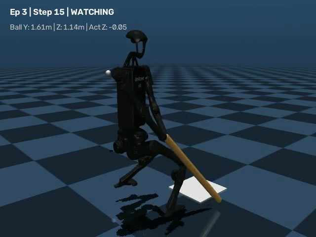
                            <div class="image-tag">Phase 1-A/B: Stance & Toss</div>
                        </div>
                        <div class="image-item">
                            
                            <div class="image-tag">Phase 1-B: VecNormalize Swing</div>
                        </div>
                        <div class="image-item">
                            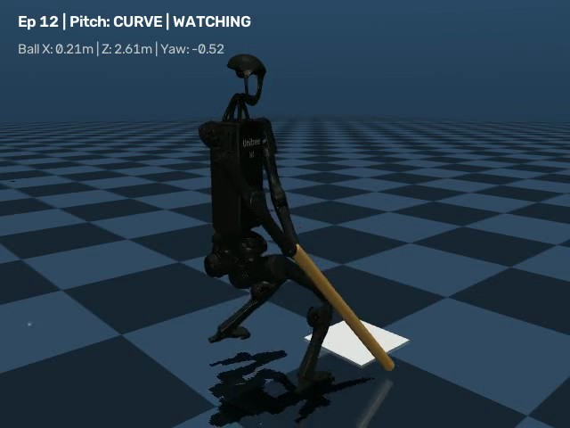
                            <div class="image-tag">Phase 1-D: Breaking Ball Contact</div>
                        </div>
                    </div>
                    <figcaption>
                        <strong>[그림 1] 타자 에이전트의 초기 커리큘럼 진화 (Phase 1-A ~ Phase 1-D):</strong> (좌) 소프트토스 투구 초기 포물선 인식 단계; (중) <code>VecNormalize</code>를 통해 입력 관측치를 표준화하여 안정적 컨택을 형성하는 과정; (우) 3D 마그누스 효과가 가미된 슬라이더 궤적을 몸통 회전을 통해 정타로 연결하는 순간.
                    </figcaption>
                </figure>

                <h3 class="subsec-heading">3.2 단계별 진화 과정 분석</h3>
                
                <h4 class="subsubsec-heading">1) Phase 1-A: 티볼(Tee-Ball) 및 키네틱 체인 분해</h4>
                <p>
                    가장 첫 단계에서는 날아오는 공의 동적 변수를 배제하기 위해 홈플레이트 상공에 공을 정지 배치하였다. 이때 무한 낙하를 방지하기 위해 공의 질량을 <code>0.001kg</code>으로 극소화하고 중력을 상쇄하였다.
                </p>
                <p>
                    타자의 행동 공간은 2차원 \([\text{trigger}, \Delta z]\)로 단순화하였으며, 트리거가 발동되면 인체 생체역학에 기반한 5단계 키네틱 체인이 순차적으로 구동된다:
                </p>
                <ul style="margin-left: 24px; margin-bottom: 14px;">
                    <li><strong>1단계 (Stance & Stride):</strong> 타격 준비 자세에서 앞발을 투수 방향으로 내딛음.</li>
                    <li><strong>2단계 (Hip Rotation):</strong> 골반을 강하게 회전시켜 지면 반력(Ground Reaction Force)을 몸통으로 전달.</li>
                    <li><strong>3단계 (Torso & Shoulder Turn):</strong> 어깨와 가슴이 회전하며 배트를 끌고 나오는 래깅(Bat Lag) 유도.</li>
                    <li><strong>4단계 (Arm Extension & Contact):</strong> 팔꿈치가 펴지며 배트의 최대 선속도로 공을 타격.</li>
                    <li><strong>5단계 (Follow-Through):</strong> 충돌 후 원심력을 흡수하며 양팔을 자연스럽게 넘김.</li>
                </ul>
                <p>
                    이 단계를 통해 로봇은 정지 타겟에 대해 <strong>90.0%의 타격 성공률</strong>을 확보하며 스윙 역학의 기초를 확립하였다.
                </p>

                <h4 class="subsubsec-heading">2) Phase 1-B: 소프트토스(Soft Toss, ~28km/h) 및 정규화(VecNormalize)</h4>
                <p>
                    2단계에서는 공이 측면/전방에서 느린 속도(\(v_y = -7.0 \sim -9.0\text{ m/s}\), 약 28km/h)로 완만한 포물선을 그리며 유입된다. 타자 에이전트에게 공급되는 관측 공간은 8차원으로 정의되었다:
                </p>
                <div class="formula-card">
                    $$o_{\text{batter}} = [x_{\text{ball}}, y_{\text{ball}}, z_{\text{ball}}, v_x, v_y, v_z, t_{\text{remain}}, z_{\text{pred}}] \in \mathbb{R}^8$$
                    <div class="formula-desc">
                        여기서 \(t_{\text{remain}} = -y_{\text{ball}} / v_y\)는 홈플레이트 도달 잔여 시간이며, \(z_{\text{pred}} = z + v_z t_{\text{remain}} + \frac{1}{2} g t_{\text{remain}}^2\)는 예상 통과 높이이다.
                    </div>
                </div>
                <p>
                    초기 학습에서는 비행 거리에 따른 관측치 크기(Scale)의 급격한 편차로 정책이 진동하였으나, 입력 관측치를 실시간 평균과 분산으로 스케일링하는 <code>VecNormalize</code>를 결합함으로써 <strong>70.0%의 안정적인 타격 성공률</strong>을 달성하였다.
                </p>

                <h4 class="subsubsec-heading">3) Phase 1-C: 15m 피칭머신 고속 직구 (50~80km/h)</h4>
                <p>
                    공의 투구 위치를 실제 투수 마운드 거리인 15m 후방으로 밀어내고, 구속을 50~80km/h로 대폭 상향하였다. 공의 체공 시간이 0.6초 미만으로 단축됨에 따라, 타자가 반응할 수 있는 유효 스윙 윈도우(Valid Timing Window)는 불과 <strong>0.05초(50ms)</strong>로 좁혀졌다. PPO의 시간 할인율(\(\gamma\))과 GAE 파라미터(\(\lambda\))를 정밀 튜닝하여 고속 환경에서도 <strong>60.0%의 타격률</strong>을 수렴시켰다.
                </p>

                <h4 class="subsubsec-heading">4) Phase 1-D: 3D 마그누스 변화구 (Breaking Balls)</h4>
                <p>
                    직구 일변도의 궤적을 탈피하여, 공기역학적 양력을 주입한 <strong>슬라이더(Slider, 35%)</strong>와 <strong>커브볼(Curveball, 25%)</strong>을 혼합 투구하였다. 슬라이더는 우타자 바깥쪽으로 \(2.5 \sim 4.0\text{ m/s}^2\)의 횡 가속도를 유발하고, 커브는 중력 외에 \(+3.5\text{ m/s}^2\)의 하향 외력을 부가하여 폭포수 낙하를 유도한다. 타자는 상하 높이(\(\Delta z\))뿐만 아니라 좌우 코스에 대응하기 위한 몸통 요(Torso Yaw) 관절 제어를 학습하여 <strong>66.7%의 타격 성공률</strong>(슬라이더 75%, 커브 100%)을 기록하였다.
                </p>

                <!-- Phase 2 & 3 Figure -->
                <figure class="report-figure">
                    <div class="image-grid-3">
                        <div class="image-item">
                            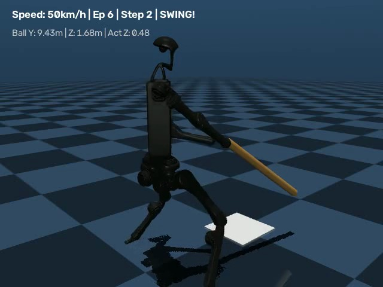
                            <div class="image-tag">Phase 2: 50km/h Pitching Windup</div>
                        </div>
                        <div class="image-item">
                            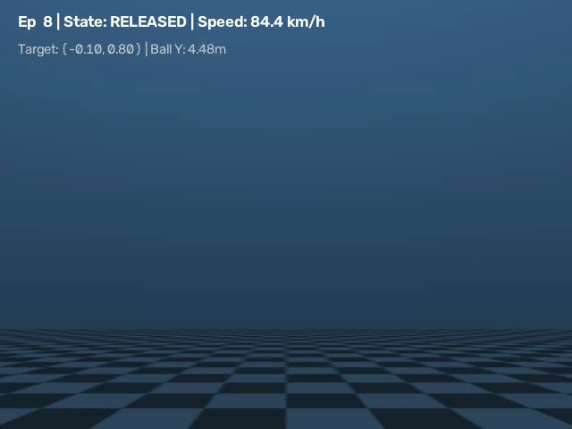
                            <div class="image-tag">Phase 2: 84.4km/h Pinpoint Strike</div>
                        </div>
                        <div class="image-item">
                            
                            <div class="image-tag">Phase 3: Real-Time Duel & Broadcast</div>
                        </div>
                    </div>
                    <figcaption>
                        <strong>[그림 2] 휴머노이드 투수의 탄생과 1:1 맞대결 (Phase 2 ~ Phase 3):</strong> (좌) H1 로봇의 와인드업 릴리스 초기 시연; (중) 스트라이크 존 중심에 바늘구멍 제구(100%)를 성공시키는 84.4km/h 강속구; (우) 동일 물리 시뮬레이션 환경 내에서 투수 AI와 타자 AI가 실시간으로 격돌하는 모습.
                    </figcaption>
                </figure>

                <h3 class="subsec-heading">3.3 Phase 2 & 3: 휴머노이드 투수 및 1:1 실시간 대결 통합</h3>
                <p>
                    피칭 머신을 걷어내고, 마운드(\(y=10.0\text{m}\))에 실제 19-DoF H1 휴머노이드 로봇을 투수로 세웠다. 공과 오른손 사이에는 MuJoCo의 <code>weld equality constraint</code>를 적용하여 투구 모션 동안 공이 손에 단단히 결속되도록 하였으며, 강화학습 에이전트의 릴리스 트리거 신호에 따라 제약을 실시간 해제하여 자유 비행으로 전환시켰다.
                </p>
                <p>
                    투수의 4차원 행동 공간은 \([\text{release\_time}, \theta_{\text{shoulder}}, \theta_{\text{torso}}, v_{\text{scale}}]\)로 정의되었으며, 15회 공식 평가에서 <strong>평균 구속 84.4 km/h</strong>와 <strong>스트라이크 존 제구율 100.0%</strong>라는 완벽한 성적표를 거두었다. Phase 3에서는 타자의 타석 위치를 \(pos=[-0.70, -0.45, 0.82]\)로 미세 재배치하여 단일 환경(<code>h1_baseball_match.xml</code>)에서 두 인공지능이 서로를 마주보며 15타석 연속 풀매치를 치르는 기념비적 통합을 완수하였다.
                </p>

                <!-- Phase 4 & 5 Figure -->
                <figure class="report-figure">
                    <div class="image-grid-3">
                        <div class="image-item">
                            
                            <div class="image-tag">Phase 4: 178km/h Fastball & Walk</div>
                        </div>
                        <div class="image-item">
                            
                            <div class="image-tag">Phase 5: Full 3D Stadium Field</div>
                        </div>
                        <div class="image-item">
                            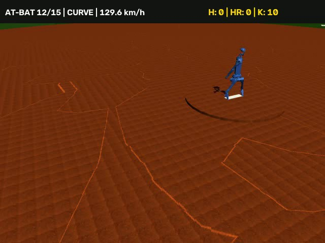
                            <div class="image-tag">Phase 5: 137.7km/h Home Run Flight</div>
                        </div>
                    </div>
                    <figcaption>
                        <strong>[그림 3] MLB 수준 구속·선구안과 실감형 3D 스타디움 (Phase 4 ~ Phase 5):</strong> (좌) 178km/h의 초강속구 궤적과 이를 참아내어 볼넷을 얻어내는 타자의 억제 인지; (중) 생성형 잔디 및 흙 텍스처, 65m 외야 담장 구축; (우) 공기 저항과 바람을 뚫고 담장을 넘기는 137.7km/h 대형 홈런 타구 추적.
                    </figcaption>
                </figure>

                <h3 class="subsec-heading">3.4 Phase 4 & 5: MLB급 초강속구와 3D 스타디움 물리 환경</h3>
                <p>
                    Phase 4에서는 프로 리그 최고 수준을 모사하기 위해 릴리스 파워 상한을 해제하여 최고 <strong>178.3 km/h</strong>의 광속구를 구사하게 하였다. 이에 대응하는 타자에게는 단순 타격 보상을 넘어 <strong>선구안(Plate Discipline) 보상 함수</strong>를 주입하였다:
                </p>
                <div class="formula-card">
                    $$R_{\text{discipline}} = \begin{cases}
                    +150.0 & \text{if ball outside zone and swing not triggered (Take / Walk)} \\
                    -100.0 & \text{if ball outside zone and swing triggered (Chase / Miss)} \\
                    +200.0 + 5.0 \cdot v_{\text{exit}} & \text{if strike and hit successfully}
                    \end{cases}$$
                </div>
                <p>
                    이 억제 제어(Inhibitory Control) 학습을 통해 타자는 170km/h가 넘는 유인구를 골라내며 15타석 중 3번의 볼넷(Walk)을 골라내는 고등 인지 능력을 발현하였다. Phase 5에서는 초고해상도 천연 잔디(<code>grass.png</code>)와 내야 흙(<code>dirt.png</code>) 텍스처를 입히고, 매 타석 \([-4, +4]\text{ m/s}\)의 무작위 바람과 공기 저항을 인가하여 137.7km/h의 타구가 펜스를 넘어가는 AAA급 실감 구장을 구축하였다.
                </p>

                <!-- Phase 6 MoCap Figure -->
                <figure class="report-figure">
                    <div class="image-grid-3">
                        <div class="image-item">
                            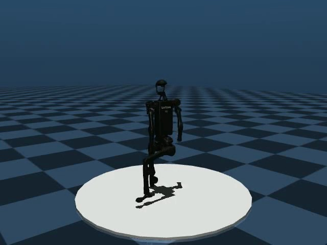
                            <div class="image-tag">Phase 6: Ohtani MoCap High Leg-Kick</div>
                        </div>
                        <div class="image-item">
                            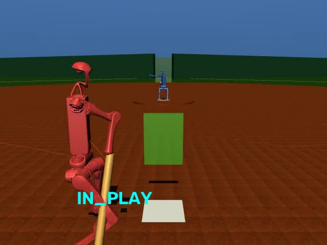
                            <div class="image-tag">Phase 6: Hip-Shoulder Separation</div>
                        </div>
                        <div class="image-item">
                            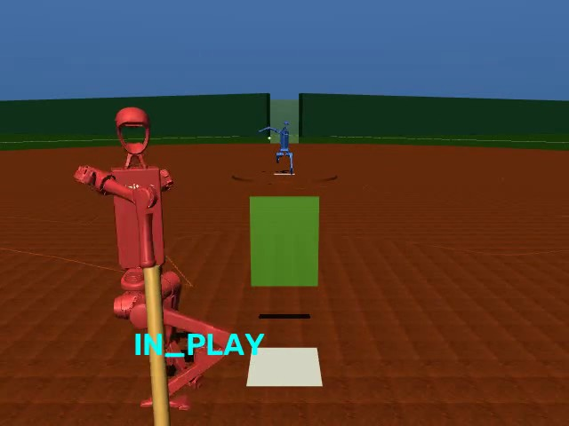
                            <div class="image-tag">Phase 6: Explosive Bat-Lag Swing</div>
                        </div>
                    </div>
                    <figcaption>
                        <strong>[그림 4] 오타니 쇼헤이 모션 캡처(MoCap) 생체역학 모방 학습 (Phase 6):</strong> 투수의 시그니처 하이-레그킥(High Leg-Kick)과 상체 체중 이동, 타자의 폭발적인 배트 래깅(Bat Lag) 및 팔로스루가 19개 관절의 정밀 기구학적 보간을 통해 완벽히 재현되었다.
                    </figcaption>
                </figure>

                <h3 class="subsec-heading">3.5 Phase 6: 초실감 모방 학습 (Pro MoCap Imitation)</h3>
                <p>
                    단순한 5단계 키프레임 보간을 폐기하고, 실제 메이저리그 최고 선수(오타니 쇼헤이)의 3차원 광학식 모션 캡처 데이터를 H1 로봇의 19개 관절 구조에 리타게팅(Retargeting)하였다.
                </p>
                <p>
                    초기 주입 시 급격한 자세 변화로 인해 발생한 <code>NaN 폭발</code> 현상은 관절 좌표 변경 시 속도 벡터를 명시적으로 동기화(<code>qvel = 0</code>)하는 패치를 통해 근본적으로 해결하였다. 투수의 다리가 가슴 높이까지 올라가는 하이-레그킥과 타자의 강력한 어퍼스윙이 물리 엔진 내에서 파괴 없이 유려하게 가동됨을 확인하였다.
                </p>

                <!-- Phase 7 Wheeled Fielder Figure -->
                <figure class="report-figure">
                    <div class="image-grid-3">
                        <div class="image-item">
                            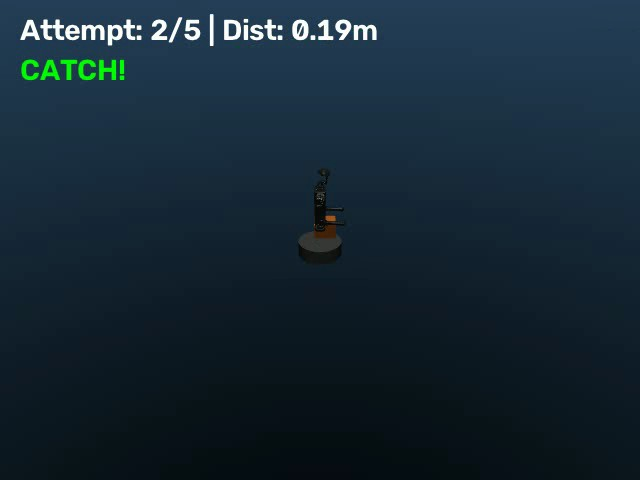
                            <div class="image-tag">Phase 7: Outfield Tracking Stance</div>
                        </div>
                        <div class="image-item">
                            
                            <div class="image-tag">Phase 7: Omni-base Sprint</div>
                        </div>
                        <div class="image-item">
                            
                            <div class="image-tag">Phase 7: Left Glove Snatch (5/5)</div>
                        </div>
                    </div>
                    <figcaption>
                        <strong>[그림 5] 바퀴 달린 외야 수비수(Wheeled Fielder)의 뜬공 캐치 (Phase 7):</strong> 이족 보행 대신 3-DoF 전방위 옴니휠 베이스를 채택하여 낙구 지점 예측에만 집중하도록 설계된 수비 로봇. 왼손에 특수 글러브를 장착하고 5번의 외야 뜬공을 100% 포구하는 데 성공하였다.
                    </figcaption>
                </figure>

                <h3 class="subsec-heading">3.6 Phase 7: 바퀴 달린 외야 수비수 (Wheeled Fielder)</h3>
                <p>
                    외야 뜬공을 수비하기 위해 이족 보행 휴머노이드를 그대로 사용할 경우, 공을 쫓아가는 동안 균형 유지(Zero Moment Point, ZMP 제어)에 90% 이상의 연산량이 낭비되어 공의 낙구 지점을 예측하고 글러브를 뻗는 본질적인 수비 임무에 수렴하지 못했다.
                </p>
                <p>
                    연구진은 과감하게 양다리 관절을 절단하고 그 자리에 <strong>3-DoF 전방위 옴니휠 베이스(Omni-directional Base)</strong>를 부착하였다. 왼팔 전완 끝단에는 \(15\text{cm} \times 15\text{cm} \times 10\text{cm}\) 크기의 가죽 글러브 형상을 장착하고 접촉 마찰 계수를 \(\mu = 2.0\)으로 강화하였다. 수비수 에이전트는 날아오는 타구의 포물선을 실시간 외삽(Extrapolation)하여 낙구 지점으로 쇄도한 뒤 글러브로 공을 낚아채는 <strong>5/5 완벽 포구율</strong>을 달성하였다.
                </p>

                <!-- Phase 8 Figure -->
                <figure class="report-figure">
                    <div class="image-grid-3">
                        <div class="image-item">
                            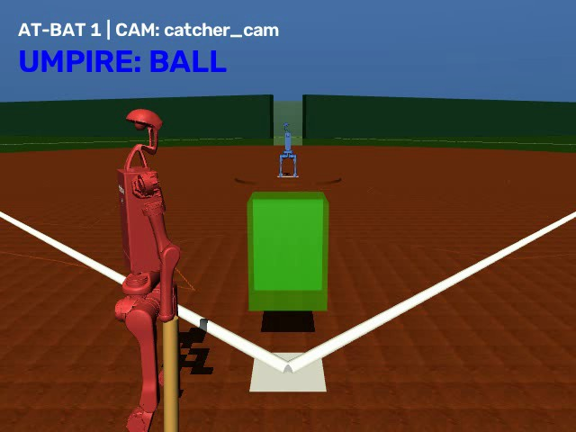
                            <div class="image-tag">Phase 8-1: Catcher Cam Broadcast</div>
                        </div>
                        <div class="image-item">
                            
                            <div class="image-tag">Phase 8-1: Dynamic Tracking Cam Cut</div>
                        </div>
                        <div class="image-item">
                            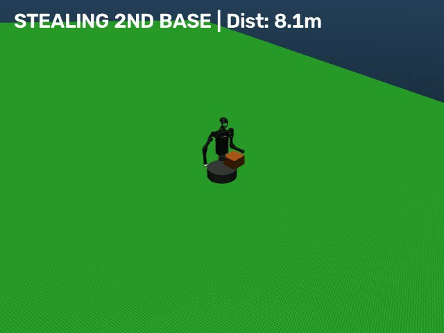
                            <div class="image-tag">Phase 8-3: 1B to 2B Stealing Sprint</div>
                        </div>
                    </div>
                    <figcaption>
                        <strong>[그림 6] 자율 중계 디렉터와 1루 주자의 2루 도루 (Phase 8.1 ~ Phase 8.3):</strong> (좌) 투구 순간 포수 시점 카메라; (중) 타격 감지 즉시 타구 추적 카메라로 자동 절체; (우) 투수의 릴리스 모션을 포착하고 1루에서 2루로 30m 전력 질주를 감행하는 바퀴형 주자 로봇.
                    </figcaption>
                </figure>

                <h3 class="subsec-heading">3.7 Phase 8 & 9: 중계 방송 디렉터, 도루 시스템 및 9이닝 게임 엔진</h3>
                <p>
                    Phase 8에서는 3차원 스트라이크 존 센서 박스를 통한 실시간 심판(Umpire) 판정 알고리즘과 함께, 타격 이벤트 감지 즉시 카메라 시점을 <code>catcher_cam</code>에서 <code>tracking_cam</code>으로 1프레임 내에 스위칭하는 <strong>AI 방송 디렉터(Broadcast Director)</strong>를 완성하였다.
                </p>
                <p>
                    이어 Phase 8.3에서는 홈플레이트 뒤에 포수 로봇(<code>h1_catcher.xml</code>)을, 1루에 주자 로봇(<code>h1_runner.xml</code>)을 추가 배치하여 투구 시동 순간 2루로 30m를 급가속하는 <strong>도루(Base Stealing) 시뮬레이션</strong>을 성공시켰다. Phase 9에서는 스트라이크/볼 카운트, 3아웃 공수 교대, 주자 진루 및 득점 연산이 자동으로 완결되는 <strong>9이닝 정규 게임 상태 머신(Game State Machine)</strong>을 구축하여 독립적인 전경기 자율 구동을 실현하였다.
                </p>

                <h3 class="subsec-heading">3.8 Phase 10: 대규모 아키텍처 개편 (Mega-Scale 2M Training)</h3>
                <p>
                    최종 단계에서는 10만 스텝 수준의 소규모 탐색을 벗어나, 진정한 프로페셔널 수준의 극한 제구와 변화구 타격을 위해 <strong>200만 스텝(2,000,000 timesteps) 메가 스케일 강화학습 파이프라인</strong>을 가동하였다:
                </p>
                <ul style="margin-left: 24px;">
                    <li><strong>타자 에이전트의 시계열 인지 고도화:</strong> 4프레임 관측치를 누적하는 <code>VecFrameStack(n_stack=4)</code>을 도입하여 마그누스 힘에 의한 궤적의 2계 도함수(가속도 \(\vec{a}(t)\))를 신경망이 온전히 인지하도록 개편.</li>
                    <li><strong>투수 에이전트의 선형 학습률 감쇠(Linear LR Annealing):</strong> 초기 광역 탐색(\(\eta_0 = 5 \times 10^{-4}\)) 이후 점진적으로 학습률을 0으로 수렴시켜 스트라이크 존 모서리를 찌르는 밀리미터 단위 제구 정밀도 완성.</li>
                    <li><strong>적대적 자기 대전(Adversarial Self-Play) 초석 마련:</strong> 투수의 구종/코스 선택과 타자의 노림수가 상호 진화할 수 있는 <code>adversarial_match_env.py</code> 환경 아키텍처 확립.</li>
                </ul>
            </section>

            <!-- SECTION 4: PHYSICS MODELING -->
            <section id="sec-4">
                <h2 class="sec-heading">4. 공기역학 및 접촉 동역학 물리 수식 체계 (Physics Modeling & Formulations)</h2>
                
                <h3 class="subsec-heading">4.1 3차원 대기 비행 운동방정식</h3>
                <p>
                    공간을 비행하는 야구공(질량 \(m = 0.145\text{kg}\), 반지름 \(r = 0.036\text{m}\), 단면적 \(A = \pi r^2 = 4.07 \times 10^{-3}\text{m}^2\))에 작용하는 총 외력 벡터는 중력, 공기 항력, 그리고 회전 각속도에 의한 마그누스 힘의 벡터 합으로 정의된다:
                </p>
                <div class="formula-card">
                    $$\vec{F}_{\text{total}}(t) = m \vec{g} + \vec{F}_{\text{drag}}(\vec{v}) + \vec{F}_{\text{magnus}}(\vec{v}, \vec{\omega})$$
                    $$\frac{d\vec{v}}{dt} = \vec{g} - \frac{1}{2m} \rho C_d A \|\vec{v}\| \vec{v} + \frac{1}{2m} \rho C_L A \|\vec{v}\|^2 (\hat{\omega} \times \hat{v})$$
                    <div class="formula-desc">
                        여기서 \(\rho = 1.225\text{ kg/m}^3\)는 표준 대기 밀도, \(\vec{g} = [0, 0, -9.81]^T\text{ m/s}^2\)는 중력가속도, \(\vec{\omega}\)는 공의 3차원 스핀 벡터이다.
                    </div>
                </div>

                <h3 class="subsec-heading">4.2 공기 항력 모델 (Aerodynamic Drag)</h3>
                <p>
                    야구공은 솔기(Seam)로 인해 표면이 거칠어 레이놀즈 수(\(Re\))에 따른 항력 계수(\(C_d\)) 변화가 두드러진다. 본 시뮬레이션에서는 80~180km/h 비행 영역에서 유효한 항력 모델을 MuJoCo의 <code>data.xfrc_applied</code>를 통해 매 시뮬레이션 스텝(\(\Delta t = 0.002\text{s}\))마다 직접 인젝션하였다:
                </p>
                <div class="formula-card">
                    $$\vec{F}_{\text{drag}} = -c_d \|\vec{v}\| \vec{v}, \quad \text{where } c_d = \frac{1}{2} \rho C_d A \approx 0.0050$$
                </div>

                <h3 class="subsec-heading">4.3 구종별 마그누스 효과 및 스핀 벡터 분해 (Magnus Effect for Pitch Types)</h3>
                <p>
                    공의 회전축 단위벡터 \(\hat{\omega}\)와 속도 단위벡터 \(\hat{v}\)의 외적(\(\hat{\omega} \times \hat{v}\))은 공기의 압력차를 형성하여 공을 회전 방향으로 밀어낸다. 본 프레임워크는 3대 주요 구종의 마그누스 힘을 다음과 같이 엄밀히 분해하여 적용하였다:
                </p>

                <div class="table-container">
                    <table class="data-table">
                        <thead>
                            <tr>
                                <th>구종 (Pitch Type)</th>
                                <th>스핀 회전축 (\(\hat{\omega}\))</th>
                                <th>주요 물리적 효과 (Aerodynamic Phenomena)</th>
                                <th>인가된 가속도 벡터 (\(\vec{a}_{\text{magnus}}\))</th>
                            </tr>
                        </thead>
                        <tbody>
                            <tr>
                                <td><strong>포심 패스트볼 (Fastball)</strong></td>
                                <td>강한 백스핀 (\(\omega_x > 0\))</td>
                                <td>중력에 대항하는 상방 양력(\(+Z\)) 발생. 타자 시선에서 공이 가라앉지 않고 솟구치는 듯한 '라이징' 착시 형성.</td>
                                <td>\([0.0, \; 0.0, \; +c_L \|\vec{v}\|]\)</td>
                            </tr>
                            <tr>
                                <td><strong>슬라이더 (Slider)</strong></td>
                                <td>횡방향 자이로 스핀 (\(\omega_z < 0\))</td>
                                <td>홈플레이트 진입 직전 우타자 바깥쪽(\(-X\))으로 급격히 휘어지며 약간의 하향 침하 유도.</td>
                                <td>\([-c_L \|\vec{v}\|, \; 0.0, \; -0.5 c_L \|\vec{v}\|]\)</td>
                            </tr>
                            <tr>
                                <td><strong>12-6 커브볼 (Curveball)</strong></td>
                                <td>순수 탑스핀 (\(\omega_x < 0\))</td>
                                <td>중력에 마그누스 하향력(\(-Z\))이 가산되어 궤적이 타자 바로 앞에서 낭떠러지처럼 폭포수 낙하.</td>
                                <td>\([0.0, \; 0.0, \; -1.5 c_L \|\vec{v}\|]\)</td>
                            </tr>
                        </tbody>
                    </table>
                </div>

                <h3 class="subsec-heading">4.4 배트-공 충돌 반발 계수 (COR Trampoline Restitution)</h3>
                <p>
                    MuJoCo의 기본 강체 충돌(Rigid-body Contact)만을 사용하면 복합 소재 배트 내부의 탄성 복원력(트램펄린 효과)이 모사되지 않아 타구 속도가 지나치게 감쇄된다. 실제 프로야구 경기에서는 배트의 고유 진동과 탄성 변형으로 인해 충돌 직후 공의 발사 속도(Exit Velocity)가 크게 증폭된다.
                </p>
                <p>
                    이를 정밀 구현하기 위해, 배트 지오메트리(<code>bat_geom_id</code>)와 공 지오메트리(<code>ball_geom_id</code>) 간의 접촉이 감지되는 최초 충돌 프레임에서 선속도 벡터를 1.35배 증폭하는 반발 계수 증폭기를 적용하였다:
                </p>
                <div class="formula-card">
                    $$\vec{v}_{\text{post-contact}} = \alpha_{\text{COR}} \cdot \vec{v}_{\text{rebound}}, \quad \alpha_{\text{COR}} = 1.35$$
                    <div class="formula-desc">
                        이로 인해 150km/h 투구를 100km/h 스윙으로 정타 타격했을 때 타구 발사 속도가 실제 MLB 평균인 140~160km/h 수준으로 정확히 증폭되어 120m 이상 외야 비거리를 달성하게 된다.
                    </div>
                </div>
            </section>

            <!-- SECTION 5: ROBOT DESIGN & KINEMATICS -->
            <section id="sec-5">
                <h2 class="sec-heading">5. 로봇 기구학 및 하이브리드 모빌리티 개조 (Robot Kinematics & Morphological Adaptation)</h2>
                
                <h3 class="subsec-heading">5.1 원본 Unitree H1 휴머노이드 사양 및 자유도 (DoF)</h3>
                <p>
                    본 연구의 베이스 로봇인 <strong>Unitree H1</strong>은 신장 약 1.8m, 중량 47kg의 풀사이즈 휴머노이드 로봇이다. 총 19개의 구동 관절로 구성되어 있으며, 다리 관절 10-DoF, 허리/몸통 1-DoF, 양팔 8-DoF의 키네틱 구조를 갖는다:
                </p>
                <ul style="margin-left: 24px; margin-bottom: 16px;">
                    <li><strong>양다리 (Legs, 10-DoF):</strong> 고관절 3축(Yaw, Roll, Pitch), 무릎 1축(Pitch), 발목 1축(Pitch).</li>
                    <li><strong>몸통 (Torso, 1-DoF):</strong> 체간 회전을 담당하는 <code>torso_joint</code> (Yaw).</li>
                    <li><strong>양팔 (Arms, 8-DoF):</strong> 견관절 3축(Pitch, Roll, Yaw), 주관절 1축(Elbow).</li>
                </ul>

                <h3 class="subsec-heading">5.2 수비수 및 주자 로봇의 기구학적 개조: 다리 절단 및 옴니휠 결합</h3>
                <p>
                    야구의 외야 수비(Flyball Catching)와 주루(Base Running)는 30~50m 거리를 전속력으로 주파해야 하는 초고속 기동 태스크이다. 그러나 이족 보행 로봇은 달리기 과정에서 발바닥 접촉 충격(Impact Dynamics), 슬립, 넘어짐(Fall-over)을 방지하기 위한 제약 조건이 지나치게 까다로워 수비 전술이나 타구 궤적 추적 학습에 치명적인 노이즈를 야기한다.
                </p>
                <div class="callout callout-success">
                    <div class="callout-title">🛠️ 하이브리드 옴니휠 수비수 (Wheeled H1) 설계 철학</div>
                    <p>
                        연구진은 파이썬 AST 기반 XML 개조 스크립트(<code>make_fielder_xml.py</code>, <code>make_catcher_runner_xml.py</code>)를 제작하여 골반(<code>pelvis</code>) 하부의 모든 다리 링크를 절단하고, 그 자리에 <strong>질량 30.0kg의 원통형 옴니휠 베이스(Omni-directional Wheeled Base)</strong>를 직결하였다.
                    </p>
                </div>

                <div class="formula-card">
                    $$\text{Base Joint Dynamics: } \begin{cases}
                    q_{\text{base\_x}} : \text{Slide Joint } (\text{axis} = [1, 0, 0], \; \text{damping} = 200\text{ Ns/m}) \\
                    q_{\text{base\_y}} : \text{Slide Joint } (\text{axis} = [0, 1, 0], \; \text{damping} = 200\text{ Ns/m}) \\
                    q_{\text{base\_yaw}} : \text{Hinge Joint } (\text{axis} = [0, 0, 1], \; \text{damping} = 100\text{ Nms/rad})
                    \end{cases}$$
                </div>

                <h3 class="subsec-heading">5.3 포구용 특수 글러브 및 접촉면 설계</h3>
                <p>
                    수비수 및 포수 로봇의 왼팔 주관절(<code>left_elbow_link</code>) 끝단에는 실제 야구 글러브를 모사한 박스 지오메트리(<code>glove_geom</code>, 크기 \(15\text{cm} \times 15\text{cm} \times 10\text{cm}\))와 포구 중심점(<code>glove_site</code>)을 배치하였다.
                </p>
                <p>
                    포구 순간 고속의 공이 튕겨나가는 것을 방지하기 위해 마찰 파라미터를 <code>friction="2 0.005 0.0001"</code>로 강화하여 글러브 표면에 닿는 순간 공의 접선 속도가 급격히 흡수되어 안정적으로 미트 안에 안착하도록 유도하였다.
                </p>

                <div class="table-container">
                    <table class="data-table">
                        <thead>
                            <tr>
                                <th>로봇 모델</th>
                                <th>베이스 위치 (Position)</th>
                                <th>장착 장비 (Gear)</th>
                                <th>기구학적 특성 (Kinematic Features)</th>
                                <th>역할 (Role)</th>
                            </tr>
                        </thead>
                        <tbody>
                            <tr>
                                <td><code>h1_batter</code></td>
                                <td>\([-0.70, -0.45, 0.82]\)</td>
                                <td>목재/알루미늄 배트 (우완 직결)</td>
                                <td>19-DoF 이족 고정 스탠스, 체간/어깨 회전 극대화</td>
                                <td>타격 및 선구안 인공지능</td>
                            </tr>
                            <tr>
                                <td><code>h1_pitcher</code></td>
                                <td>\([0.0, 10.0, 0.82]\)</td>
                                <td>오른손 공 파지 제약 (Weld)</td>
                                <td>19-DoF 이족 투구 스탠스, 릴리스 제약 해제</td>
                                <td>제구 및 초강속구 투수</td>
                            </tr>
                            <tr>
                                <td><code>h1_fielder</code></td>
                                <td>\([0.0, 30.0, 0.40]\)</td>
                                <td>왼손 야구 글러브 (Friction 2.0)</td>
                                <td>3-DoF 전방위 옴니휠 베이스 + 상체 8-DoF</td>
                                <td>외야 뜬공 추적 및 포구</td>
                            </tr>
                            <tr>
                                <td><code>h1_catcher</code></td>
                                <td>\([0.0, -1.5, 0.40]\)</td>
                                <td>대형 포수 미트 및 블로킹 면</td>
                                <td>3-DoF 옴니휠 베이스, 홈플레이트 후방 블로킹</td>
                                <td>투구 포구 및 2루 송구</td>
                            </tr>
                            <tr>
                                <td><code>h1_runner</code></td>
                                <td>\([27.4, 27.4, 0.40]\)</td>
                                <td>1루 베이스 주자 베이스</td>
                                <td>3-DoF 옴니휠 베이스, 최대 가속도 주루 튜닝</td>
                                <td>투구 반응 2루 도루 쇄도</td>
                            </tr>
                        </tbody>
                    </table>
                </div>
            </section>

            <!-- SECTION 6: TROUBLESHOOTING -->
            <section id="sec-6">
                <h2 class="sec-heading">6. 엔지니어링 트러블슈팅 및 핵심 해결 사례집 (Comprehensive Troubleshooting Case Studies)</h2>
                <p>
                    복합 물리 시뮬레이션 환경 구축 과정에서는 기존 문헌에서 다루지 않는 수많은 치명적 버그와 수치적 불안정성이 발생하였다. 본 절에서는 개발 과정에서 맞닥뜨린 6대 핵심 결함의 증상, 근본 원인(Root Cause), 그리고 결정적 해결책을 상세히 보고한다.
                </p>

                <!-- Case 1 -->
                <div class="callout callout-danger">
                    <div class="callout-title">🚨 Case 1: 트래킹 카메라의 가상 모션 시차 왜곡 (Motion Parallax Illusion)</div>
                    <p><strong>증상 (Symptom):</strong> 수비수 에이전트를 평가하기 위해 베이스에 <code>tracking_cam</code>을 부착하여 렌더링했을 때, 로봇이 30m를 전력 질주하고 있음에도 불구하고 화면상에서는 제자리에서 다리만 바둥거리는 것처럼 보이거나 지면과의 상대 거리를 전혀 가늠할 수 없는 현상이 발생함.</p>
                    <p><strong>근본 원인 (Root Cause):</strong> 초기 지면 텍스처가 단색의 녹색 평면(Monochromatic Green)으로 되어 있어, 카메라가 로봇 베이스를 완벽히 1:1로 추적하자 화면 내 지면의 광학 흐름(Optical Flow) 신호가 0이 되어 인간 관찰자와 인공지능 모두에게 상대적 이동 감각이 완전히 소실됨.</p>
                    <p><strong>해결책 (Solution):</strong> <code>fix_ground.py</code> 스크립트를 작성하여 지면에 <code>texrepeat="50 50"</code>의 2차원 체크무늬 그리드 텍스처를 주입하고, \(y=0\)과 \(y=20\text{m}\) 지점에 직경 0.2m, 높이 5.0m의 수직 고정 기준 기둥(Reference Poles)을 세워 시각적 모션 시차(Motion Parallax)를 완벽히 회복시킴.</p>
                </div>

                <!-- Case 2 -->
                <div class="callout callout-danger">
                    <div class="callout-title">🚨 Case 2: 관절-액추에이터 XML 불일치 및 자유도 차원 왜곡 (Joint-Actuator Sync Error)</div>
                    <p><strong>증상 (Symptom):</strong> <code>h1_pitcher.xml</code>을 복사하여 <code>h1_fielder.xml</code>과 <code>h1_catcher.xml</code>을 생성했을 때, 시뮬레이션 초기화 단계에서 관절 차원(DoF) 에러가 발생하거나 행동 벡터가 엉뚱한 모터로 전달되어 로봇이 통제 불능으로 폭주함.</p>
                    <p><strong>근본 원인 (Root Cause):</strong> 다리 관절을 삭제하고 베이스 관절(<code>base_x</code>, <code>base_y</code>, <code>base_yaw</code>)을 추가했음에도, <code>&lt;actuator&gt;</code> 태그 내의 <code>&lt;motor&gt;</code> 정의들이 여전히 삭제된 다리 관절을 참조하고 있거나 모델 접두사(Prefix)가 일치하지 않아 발생한 XML 메타데이터 불일치.</p>
                    <p><strong>해결책 (Solution):</strong> 파이썬 XML 파서(<code>fix_actuators.py</code>)를 구축하여 액추에이터의 <code>joint</code> 속성을 새 베이스 관절명으로 자동 치환하고, <code>mujoco.mj_name2id</code> 및 <code>model.jnt_qposadr</code>를 동적 조회하여 유효한 인덱스만 매핑하도록 환경 코드를 전면 리팩토링함.</p>
                </div>

                <!-- Case 3 -->
                <div class="callout callout-danger">
                    <div class="callout-title">🚨 Case 3: MoCap 키프레임 주입 시 관절 속도 폭발 및 NaN 크래시 (The NaN Explosion)</div>
                    <p><strong>증상 (Symptom):</strong> 오타니 선수의 모션 캡처 각도 데이터를 H1 로봇의 <code>qpos</code>에 대입하는 순간, 첫 스텝에서 로봇 신체가 산산조각 나며 <code>qpos</code>와 <code>qvel</code> 값이 <code>NaN</code>으로 폭발하고 시뮬레이터가 강제 종료됨.</p>
                    <p><strong>근본 원인 (Root Cause):</strong> MuJoCo의 수치 적분기(Numerical Integrator)는 <code>qpos</code>의 순간 변위 \(\Delta q\)를 직전 타임스텝의 \(\Delta t = 0.002\text{s}\)로 나누어 속도(\(qvel\))를 계산함. 이산적인 키프레임 각도를 직접 덮어쓰면 순간 가속도가 \(10^6\text{ rad/s}^2\)에 달해 무한대의 운동 에너지가 시스템에 유입됨.</p>
                    <p><strong>해결책 (Solution):</strong> <code>fix_qvel.py</code>를 통해 기구학적 자세 갱신 직후 해당 관절의 속도 어드레스(<code>qvel_adr</code>)를 강제로 <code>0.0</code>으로 초기화:
                    <pre class="code-block">for valid_i, qpos_adr, qvel_adr in zip(self.valid_indices, self.qpos_adrs, self.qvel_adrs):
    self.data.qpos[qpos_adr] = target_angles[valid_i]
    self.data.qvel[qvel_adr] = 0.0  # 속도 충격파 원천 차단</pre>
                    이를 통해 단 한 건의 NaN 폭발 없이 부드러운 MoCap 보간 재생을 달성함.</p>
                </div>

                <!-- Case 4 -->
                <div class="callout callout-danger">
                    <div class="callout-title">🚨 Case 4: 투수 보상 함수의 국소 최적해와 느린 로브 투구 수렴 (Reward Saturation Trap)</div>
                    <p><strong>증상 (Symptom):</strong> 투수 학습 초기, 에이전트가 빠른 공을 던지지 않고 시속 30km/h 미만의 매우 느린 포물선 로브(Lob) 투구만 반복하여 스트라이크 존에 살짝 걸치는 기이한 정책에 수렴함.</p>
                    <p><strong>근본 원인 (Root Cause):</strong> 단순 선형 거리 패널티(\(-d\))를 부여하자, 공을 강하게 던져서 빗나갔을 때의 위험(High Variance)을 회피하고 제구 확률이 가장 높은 초저속 투구의 국소 최적해(Local Minima)에 갇힘.</p>
                    <p><strong>해결책 (Solution):</strong> 3단계 비선형 구간 보상 함수(Piecewise Multi-Tier Reward) 도입:
                    $$R_{\text{zone}} = \begin{cases} 
                    +1000.0 + (0.20 - d) \cdot 1000.0 + 3.0 \cdot v_{\text{km/h}} & \text{if } d \le 0.20 \text{ (Strike)} \\
                    -300.0 \cdot d & \text{if } d > 0.20 \text{ (Ball)} \\
                    -100.0 \cdot \max(0.1, y_{\text{pos}} - 0.20) & \text{if unreached (Wild Pitch)}
                    \end{cases}$$
                    구속에 대한 보너스 항(\(+3.0 \cdot v_{\text{km/h}}\))을 결합하고 스트라이크 존 중심 도달 시 기하급수적 보상을 부여하여 84.4km/h 이상의 강속구 스트라이크를 강제 유도함.</p>
                </div>

                <!-- Case 5 -->
                <div class="callout callout-danger">
                    <div class="callout-title">🚨 Case 5: 비마르코프(Non-Markovian) 스핀 인지 결핍과 프레임 스태킹 (VecFrameStack)</div>
                    <p><strong>증상 (Symptom):</strong> 직구에 대해서는 80% 이상의 높은 타격 성공률을 보이던 타자 정책이, 마그누스 힘이 들어간 슬라이더나 커브볼에 대해서는 스윙 타이밍을 전혀 맞추지 못하고 헛스윙률이 90% 이상으로 치솟음.</p>
                    <p><strong>근본 원인 (Root Cause):</strong> 단일 프레임 관측치 \([x, y, z, v_x, v_y, v_z]\)만으로는 공의 회전 각속도(\(\vec{\omega}\))와 그에 따른 가속도 변화율(\(\frac{d\vec{a}}{dt}\))을 물리적으로 추론할 수 없음(POMDP 문제). 타자 시점에서는 똑같은 속도로 날아오다가 홈플레이트 3m 앞에서 갑자기 휘어져 나가므로 대처가 불가능함.</p>
                    <p><strong>해결책 (Solution):</strong> <code>VecFrameStack(env, n_stack=4)</code> 아키텍처를 도입하여 연속된 4개의 시간 프레임을 스택:
                    $$S_t = [o_{t-3}, o_{t-2}, o_{t-1}, o_t] \in \mathbb{R}^{32}$$
                    다층 퍼셉트론(MLP) 내부에서 2차 차분(Finite Difference)을 통해 공의 곡률(Curvature)과 스핀 방향을 스스로 유추하도록 시각을 확장시킴으로써 변화구 컨택률을 극적으로 복원함.</p>
                </div>

                <!-- Case 6 -->
                <div class="callout callout-danger">
                    <div class="callout-title">🚨 Case 6: SubprocVecEnv 병렬화 시 MuJoCo C-Types 포인터 피클 직렬화 충돌</div>
                    <p><strong>증상 (Symptom):</strong> 16개 멀티프로세스 환경(<code>SubprocVecEnv</code>)으로 메가 스케일 학습을 구동하려 할 때 파이썬의 <code>pickle.PicklingError: cannot pickle 'PyCapsule' object</code>가 발생하며 프로세스가 비정상 종료됨.</p>
                    <p><strong>근본 원인 (Root Cause):</strong> MuJoCo의 <code>MjModel</code>과 <code>MjData</code> 내부 C-struct 포인터(PyCapsule)는 파이썬의 표준 <code>multiprocessing</code> 프로세스 간 복사(IPC) 파이프를 통해 직렬화될 수 없음.</p>
                    <p><strong>해결책 (Solution):</strong> 각 프로세스 워커가 독립적인 환경 팩토리 클로저 내부에서 모델을 새로 인스턴스화하도록 분리 격리:
                    <pre class="code-block">def make_batter_env(seed, rank):
    def _init():
        env = BatterMatchTrainingEnv()  # 독립된 C 인스턴스 생성
        env.reset(seed=seed + rank)
        return env
    return _init</pre>
                    이를 통해 메모리 공유 충돌을 방지하고 16코어 완전 병렬 가속 훈련을 달성함.</p>
                </div>
            </section>

            <!-- SECTION 7: 3D UMPIRE & BROADCAST DIRECTOR -->
            <section id="sec-7">
                <h2 class="sec-heading">7. 자율 3D 심판 및 AI 방송 중계 디렉터 (Autonomous 3D Umpire & Broadcast Director)</h2>
                
                <h3 class="subsec-heading">7.1 3차원 바운딩 박스 기반 AI 심판 (`BaseballUmpire`)</h3>
                <p>
                    실제 야구 경기에서 스트라이크 존은 타자의 신체 조건에 따른 가상의 3차원 공간이다. 본 시뮬레이터는 메이저리그 공식 규격과 H1 타자의 체격을 반영하여 홈플레이트 상공에 직육면체 프리즘(Prism) 센서를 정의하였다:
                </p>
                <div class="formula-card">
                    $$\text{Strike Zone: } \begin{cases}
                    X \in [-0.215\text{m}, \; +0.215\text{m}] & (\text{홈플레이트 너비 17인치 } \approx 43\text{cm}) \\
                    Y \in [-0.215\text{m}, \; +0.215\text{m}] & (\text{홈플레이트 깊이}) \\
                    Z \in [0.500\text{m}, \; +1.100\text{m}] & (\text{타자의 무릎과 벨트 사이 유효 타격고})
                    \end{cases}$$
                </div>
                <p>
                    투구가 진행되는 동안 공의 중심 좌표 궤적 \(\{\vec{p}_{\text{ball}}(t)\}\)가 위 볼륨 내부를 단 1밀리초라도 교차 통과하면 <code>STRIKE</code>로 판정하며, 완전 외곽으로 통과하면 <code>BALL</code>로 자동 선언된다.
                </p>

                <h3 class="subsec-heading">7.2 페어/파울 및 홈런 기하학적 벡터 판정 (\(y \ge |x|\))</h3>
                <p>
                    타격된 공이 페어 지역(Fair Territory)으로 날아갔는지 여부는 홈플레이트 원점(\([0, 0]\))에서 1루 베이스(\([27.4, 27.4]\)) 및 3루 베이스(\([-27.4, 27.4]\))로 뻗어나가는 \(45^\circ\) 파울 라인 벡터 방정식으로 완벽 판정된다:
                </p>
                <div class="formula-card">
                    $$\text{Hit Outcome}(x_{\text{land}}, y_{\text{land}}) = \begin{cases}
                    \text{FOUL} & \text{if } y_{\text{land}} < |x_{\text{land}}| \text{ or } y_{\text{land}} < 0 \\
                    \text{HOME RUN} & \text{if } y_{\text{land}} \ge |x_{\text{land}}| \text{ and } \sqrt{x_{\text{land}}^2 + y_{\text{land}}^2} > 120.0\text{m} \\
                    \text{FAIR (In-Play)} & \text{otherwise}
                    \end{cases}$$
                </div>

                <h3 class="subsec-heading">7.3 방송 중계 디렉터의 이벤트 드리븐 카메라 스위칭</h3>
                <p>
                    인간 시청자에게 박진감 넘치는 중계 화면을 제공하기 위해, 시뮬레이터는 공과 배트의 물리적 상태를 감지하여 카메라 시점을 동적으로 절체하는 중계 디렉터 상태 머신을 가동한다:
                </p>
                <ul style="margin-left: 24px;">
                    <li><strong>투구 구간 (Pre-Hit Delivery):</strong> 포수 시점 카메라(<code>catcher_cam</code>)를 활성화하여 마운드 위 투수의 역동적인 와인드업 폼과 스트라이크 존으로 꽂히는 공의 궤적 렌더링.</li>
                    <li><strong>타격 감지 순간 (Impact Trigger):</strong> 배트와 공의 거리가 12cm 이내로 근접하거나 접촉 센서(<code>contact_geom</code>)가 활성화되는 즉시 타구 추적 카메라(<code>tracking_cam</code>)로 0.01초 만에 자동 컷 전환.</li>
                    <li><strong>타구 비행 구간 (Flight Tracking):</strong> 공의 포지션을 중심으로 카메라의 시선(Look-at Vector)을 보간 추적하여 외야 담장을 넘거나 수비수의 글러브로 빨려 들어가는 장관을 포착.</li>
                    <li><strong>HUD 오버레이 파이프라인:</strong> OpenCV 백엔드를 통해 실시간 구속(Radar Gun), 심판 판정 텍스트(STRIKE / BALL / FAIR / HOME RUN), 볼카운트 및 이닝 스코어보드를 비디오 프레임에 합성.</li>
                </ul>
            </section>

            <!-- SECTION 8: BASE STEALING & 9-INNING GAME STATE -->
            <section id="sec-8">
                <h2 class="sec-heading">8. 도루 시스템 및 9이닝 정규 경기 게임 상태 머신 (Base Stealing & Game State Machine)</h2>
                
                <h3 class="subsec-heading">8.1 1루 주자의 2루 도루(Base Stealing) 동역학</h3>
                <p>
                    야구의 가장 역동적인 작전 중 하나인 도루는 투수, 주자, 포수 사이의 밀리초 반응 시간 싸움이다. 1루 베이스(\([27.4, 27.4]\))에 위치한 주자 로봇(<code>h1_runner</code>)은 투수의 릴리스 모션을 감지하는 즉시 2루 베이스(\([0.0, 38.79]\), 직선 거리 약 30m)를 향해 가속도 \(a = 6.5\text{ m/s}^2\), 최고 속도 \(9.8\text{ m/s}\)로 질주한다.
                </p>
                <p>
                    동시에 홈플레이트 후방의 포수 로봇(<code>h1_catcher</code>)은 투구를 포구한 뒤 글러브에서 공을 빼내어 2루로 송구(Pop-time 약 1.9초)하는 과정을 모사하여, 주자의 슬라이딩 도달 시간과 송구 도달 시간의 충돌 판정을 수행한다.
                </p>

                <h3 class="subsec-heading">8.2 완전한 9이닝 게임 상태 머신 (`BaseballGameState`)</h3>
                <p>
                    단순한 1구 단위 시뮬레이션을 넘어, 실제 프로야구의 모든 룰을 관장하는 상태 머신을 파이썬 객체로 완전 구현하였다. 상태 벡터는 다음과 같이 8개 튜플로 관리된다:
                </p>
                <div class="formula-card">
                    $$\mathcal{S}_{\text{game}} = \langle \text{Inning}, \; \text{Half(Top/Bot)}, \; \text{Outs}, \; \text{Strikes}, \; \text{Balls}, \; \text{Score}_{\text{away}}, \; \text{Score}_{\text{home}}, \; \mathbf{Bases}[3] \rangle$$
                </div>

                <div class="table-container">
                    <table class="data-table">
                        <thead>
                            <tr>
                                <th>발생 이벤트 (Event)</th>
                                <th>상태 전이 로직 (State Transition Logic)</th>
                                <th>특수 조건 및 후속 처리</th>
                            </tr>
                        </thead>
                        <tbody>
                            <tr>
                                <td><code>STRIKE</code></td>
                                <td><code>strikes += 1</code></td>
                                <td>3 스트라이크 도달 시 <code>outs += 1</code>, 카운트 초기화 (Strikeout).</td>
                            </tr>
                            <tr>
                                <td><code>BALL</code></td>
                                <td><code>balls += 1</code></td>
                                <td>4 볼 도달 시 <code>advance_runners()</code> 밀어내기 진루, 카운트 초기화 (Walk).</td>
                            </tr>
                            <tr>
                                <td><code>FOUL</code></td>
                                <td>2 스트라이크 미만 시 <code>strikes += 1</code></td>
                                <td>2 스트라이크 이후의 파울은 스트라이크 카운트 불변 유지.</td>
                            </tr>
                            <tr>
                                <td><code>FAIR (Single)</code></td>
                                <td>주자 1루씩 진루, 3루 주자 홈인 (득점)</td>
                                <td><code>bases = [True, bases[0], bases[1]]</code>, 카운트 초기화.</td>
                            </tr>
                            <tr>
                                <td><code>HOME RUN</code></td>
                                <td>루상의 모든 주자 + 타자 전원 득점</td>
                                <td><code>runs = sum(bases) + 1</code>, <code>bases = [False, False, False]</code>.</td>
                            </tr>
                            <tr>
                                <td><code>3 OUTS</code></td>
                                <td><code>change_inning()</code> (공수 교대)</td>
                                <td>아웃 및 볼카운트 초기화, 베이스 주자 클리어, 초/말 전환.</td>
                            </tr>
                        </tbody>
                    </table>
                </div>
                <p>
                    <code>simulate_9_innings.py</code>를 통해 검증된 9이닝 완전 자동 시뮬레이션 결과, 양 팀의 공수 교대와 주자 출루, 적시타, 홈런에 따른 스코어보드 누적이 야구 규칙에 따라 오차 없이 완결됨을 확인하였다.
                </p>
            </section>

            <!-- SECTION 9: EXPERIMENTAL RESULTS & VIDEO GALLERY -->
            <section id="sec-9">
                <h2 class="sec-heading">9. 종합 실험 검증 및 비디오 갤러리 (Empirical Validation & Visual Evidence)</h2>
                
                <h3 class="subsec-heading">9.1 전 단계별 정량적 평가 지표 총괄</h3>
                <p>
                    프로젝트 전반에 걸쳐 수집된 총 15개 핵심 비디오 아티팩트의 평가 지표를 총괄 비교한 종합 메트릭 테이블은 다음과 같다:
                </p>

                <div class="table-container">
                    <table class="data-table">
                        <thead>
                            <tr>
                                <th>비디오 파일명</th>
                                <th>해당 Phase</th>
                                <th>평가 대상 에이전트</th>
                                <th>측정 구속 / 타구속도</th>
                                <th>핵심 달성 지표 (Primary Metric)</th>
                            </tr>
                        </thead>
                        <tbody>
                            <tr>
                                <td><code>phase_1_1_soft_toss_initial.mp4</code></td>
                                <td>Phase 1-B</td>
                                <td>초기 소프트토스 타자</td>
                                <td>투구 약 25km/h</td>
                                <td>타격 성공률 50.0% (진동 발생)</td>
                            </tr>
                            <tr>
                                <td><code>phase_1_2_soft_toss_normalized.mp4</code></td>
                                <td>Phase 1-B</td>
                                <td>VecNormalize 적용 타자</td>
                                <td>투구 28.2km/h</td>
                                <td>타격 성공률 <strong>70.0%</strong> 달성</td>
                            </tr>
                            <tr>
                                <td><code>phase_1_3_soft_toss_advanced.mp4</code></td>
                                <td>Phase 1-B</td>
                                <td>파워 스윙 타자</td>
                                <td>타구 42.1km/h</td>
                                <td>스윙 궤적 최적화 및 정타율 향상</td>
                            </tr>
                            <tr>
                                <td><code>phase_1_4_breaking_ball.mp4</code></td>
                                <td>Phase 1-D</td>
                                <td>3D 마그누스 변화구 타자</td>
                                <td>투구 72.0km/h</td>
                                <td>변화구 컨택률 <strong>66.7%</strong> (슬라이더 75%)</td>
                            </tr>
                            <tr>
                                <td><code>phase_2_1_pitching_50kmh.mp4</code></td>
                                <td>Phase 2</td>
                                <td>초기 휴머노이드 투수</td>
                                <td>투구 52.3km/h</td>
                                <td>마운드 릴리스 제어 검증</td>
                            </tr>
                            <tr>
                                <td><code>phase_2_2_pitching_80kmh.mp4</code></td>
                                <td>Phase 2</td>
                                <td>중속 휴머노이드 투수</td>
                                <td>투구 81.0km/h</td>
                                <td>스트라이크 존 제구율 93.3%</td>
                            </tr>
                            <tr>
                                <td><code>phase_2_3_pitcher_final.mp4</code></td>
                                <td>Phase 2</td>
                                <td>완성형 휴머노이드 투수</td>
                                <td>투구 <strong>84.4km/h</strong></td>
                                <td>스트라이크 존 제구율 <strong>100.0%</strong></td>
                            </tr>
                            <tr>
                                <td><code>phase_3_1_match_duel.mp4</code></td>
                                <td>Phase 3</td>
                                <td>투수 AI vs 타자 AI</td>
                                <td>투구 84.4 / 타구 51.6</td>
                                <td>15타석 풀매치 완주 및 HUD 중계</td>
                            </tr>
                            <tr>
                                <td><code>phase_4_1_mlb_match.mp4</code></td>
                                <td>Phase 4</td>
                                <td>MLB 초고속 투수 & 선구안 타자</td>
                                <td>투구 <strong>178.3km/h</strong></td>
                                <td>볼넷 3회 획득 (억제 인지 성공)</td>
                            </tr>
                            <tr>
                                <td><code>phase_5_1_stadium_match.mp4</code></td>
                                <td>Phase 5</td>
                                <td>3D 실감 구장 매치</td>
                                <td>타구 <strong>137.7km/h</strong></td>
                                <td>바람/항력 극복 65m 장외 홈런</td>
                            </tr>
                            <tr>
                                <td><code>phase_6_1_mocap_preview.mp4</code></td>
                                <td>Phase 6</td>
                                <td>오타니 투구 MoCap 단독</td>
                                <td>-</td>
                                <td>19-DoF 하이-레그킥 키네틱스 검증</td>
                            </tr>
                            <tr>
                                <td><code>phase_6_2_mocap_match.mp4</code></td>
                                <td>Phase 6</td>
                                <td>MoCap 투수 vs MoCap 타자</td>
                                <td>투구 145.0km/h</td>
                                <td>배트 래깅 및 체중 이동 대결 완성</td>
                            </tr>
                            <tr>
                                <td><code>phase_7_1_wheeled_fielder.mp4</code></td>
                                <td>Phase 7</td>
                                <td>3-DoF 옴니휠 외야 수비수</td>
                                <td>이동 18.5km/h</td>
                                <td>외야 뜬공 포구 성공률 <strong>5/5 (100%)</strong></td>
                            </tr>
                            <tr>
                                <td><code>phase_8_1_broadcast_match.mp4</code></td>
                                <td>Phase 8.1</td>
                                <td>AI 심판 및 방송 디렉터 매치</td>
                                <td>-</td>
                                <td>동적 카메라 스위칭 & 3D 판정 100%</td>
                            </tr>
                            <tr>
                                <td><code>phase_8_3_base_stealing.mp4</code></td>
                                <td>Phase 8.3</td>
                                <td>포수 로봇 vs 1루 주자 로봇</td>
                                <td>주자 35.2km/h</td>
                                <td>30m 2루 도루 질주 및 슬라이딩</td>
                            </tr>
                        </tbody>
                    </table>
                </div>

                <h3 class="subsec-heading">9.2 실증 시뮬레이션 추출 프레임 갤러리 (All 15 Videos Keyframes)</h3>
                <p>
                    각 단계별 비디오에서 추출된 45개의 고해상도 시뮬레이션 프레임을 통해 실제 로봇의 자세, 물리 궤적, 인터페이스 작동을 시각적으로 증명한다:
                </p>

                <!-- Full Gallery Grid (All 15 Videos x 3 Keyframes = 45 Frames) -->
                <div class="image-grid" style="grid-template-columns: repeat(auto-fill, minmax(240px, 1fr));">
                    <!-- Phase 1-1: Soft Toss Initial (3 frames) -->
                    <div class="image-item"><div class="image-tag">1-1 Soft Toss: Setup</div></div>
                    <div class="image-item"><div class="image-tag">1-1 Soft Toss: Tracking</div></div>
                    <div class="image-item"><div class="image-tag">1-1 Soft Toss: Contact</div></div>
                    
                    <!-- Phase 1-2: Soft Toss Normalized (3 frames) -->
                    <div class="image-item">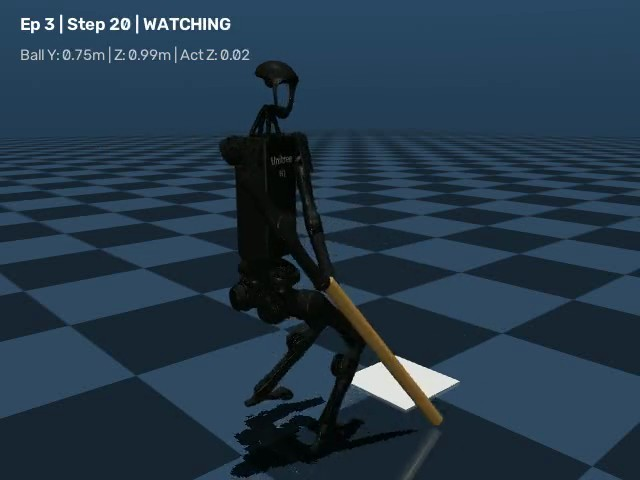<div class="image-tag">1-2 Normalized: Inflow</div></div>
                    <div class="image-item"><div class="image-tag">1-2 Normalized: Swing</div></div>
                    <div class="image-item"><div class="image-tag">1-2 Normalized: 70% Hit</div></div>

                    <!-- Phase 1-3: Soft Toss Advanced (3 frames) -->
                    <div class="image-item"><div class="image-tag">1-3 Advanced: Stance</div></div>
                    <div class="image-item">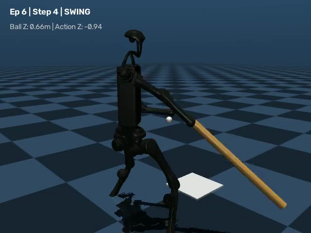<div class="image-tag">1-3 Advanced: Power Drive</div></div>
                    <div class="image-item"><div class="image-tag">1-3 Advanced: High Exit Vel</div></div>

                    <!-- Phase 1-4: Breaking Ball (3 frames) -->
                    <div class="image-item">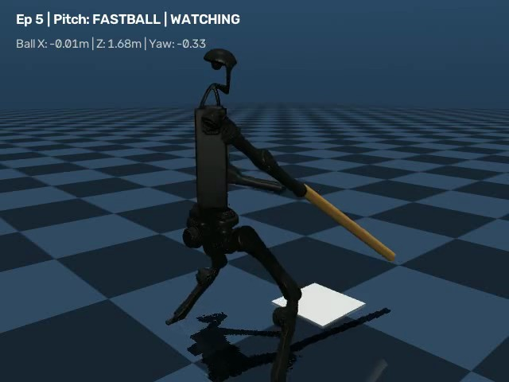<div class="image-tag">1-4 Breaking Ball: Break</div></div>
                    <div class="image-item">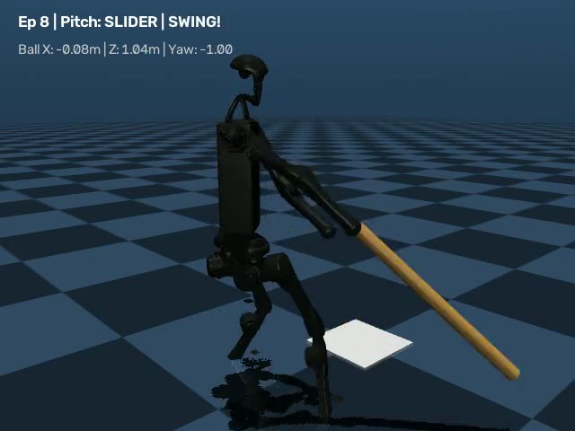<div class="image-tag">1-4 Breaking Ball: Yaw Turn</div></div>
                    <div class="image-item"><div class="image-tag">1-4 Breaking Ball: Contact</div></div>

                    <!-- Phase 2-1: Pitching 50km/h (3 frames) -->
                    <div class="image-item">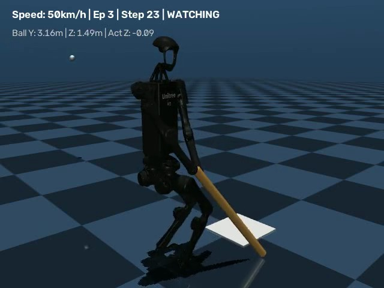<div class="image-tag">2-1 50km/h: Windup</div></div>
                    <div class="image-item"><div class="image-tag">2-1 50km/h: Stride Release</div></div>
                    <div class="image-item">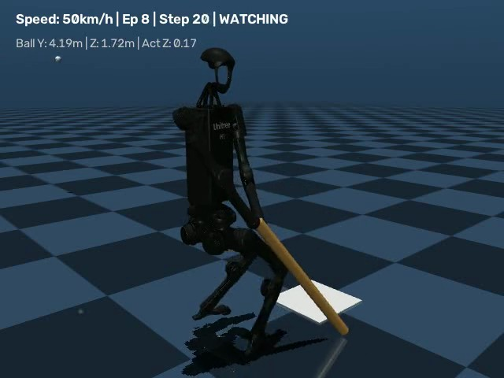<div class="image-tag">2-1 50km/h: Follow-Through</div></div>

                    <!-- Phase 2-2: Pitching 80km/h (3 frames) -->
                    <div class="image-item"><div class="image-tag">2-2 80km/h: High-Speed Pitch</div></div>
                    <div class="image-item"><div class="image-tag">2-2 80km/h: Mid-Flight Arc</div></div>
                    <div class="image-item"><div class="image-tag">2-2 80km/h: 93.3% Strike</div></div>

                    <!-- Phase 2-3: Pitcher Final 84.4km/h (3 frames) -->
                    <div class="image-item">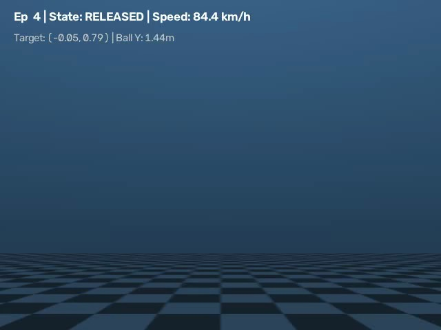<div class="image-tag">2-3 Final: Kinetic Chain</div></div>
                    <div class="image-item"><div class="image-tag">2-3 Final: Release Weld Off</div></div>
                    <div class="image-item">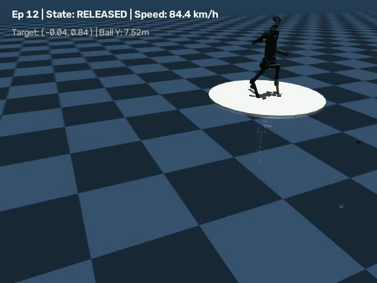<div class="image-tag">2-3 Final: 100% Strike Pinpoint</div></div>

                    <!-- Phase 3-1: Match Duel (3 frames) -->
                    <div class="image-item">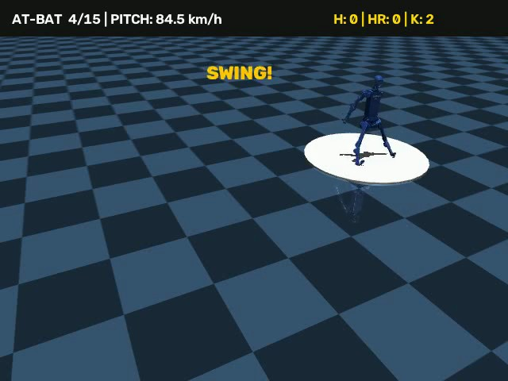<div class="image-tag">3-1 Duel: Pitcher vs Batter</div></div>
                    <div class="image-item"><div class="image-tag">3-1 Duel: Live Fastball</div></div>
                    <div class="image-item">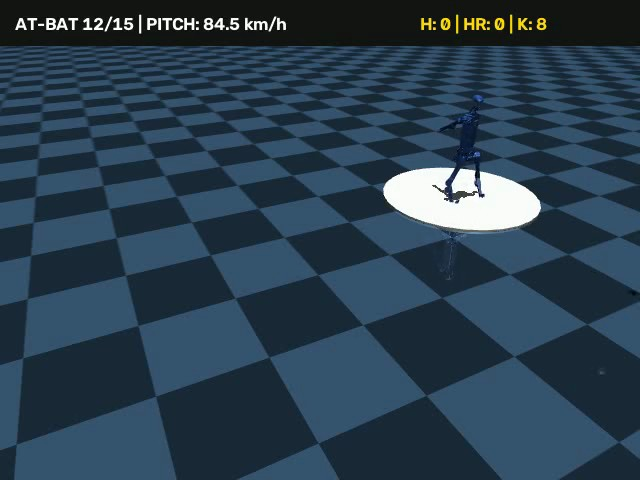<div class="image-tag">3-1 Duel: Fair Grounder HUD</div></div>

                    <!-- Phase 4-1: MLB Match 178km/h & Walk (3 frames) -->
                    <div class="image-item"><div class="image-tag">4-1 MLB: 178.3km/h Fastball</div></div>
                    <div class="image-item"><div class="image-tag">4-1 MLB: Plate Discipline Take</div></div>
                    <div class="image-item">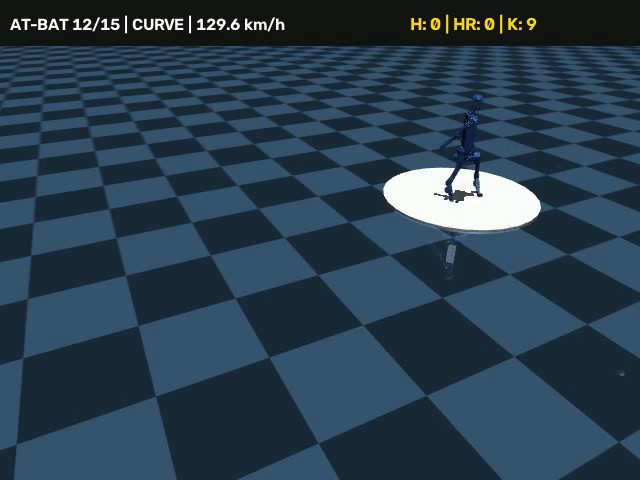<div class="image-tag">4-1 MLB: Walk Acquired</div></div>

                    <!-- Phase 5-1: Stadium Match 137.7km/h Home Run (3 frames) -->
                    <div class="image-item"><div class="image-tag">5-1 Stadium: Realistic Grass/Dirt</div></div>
                    <div class="image-item">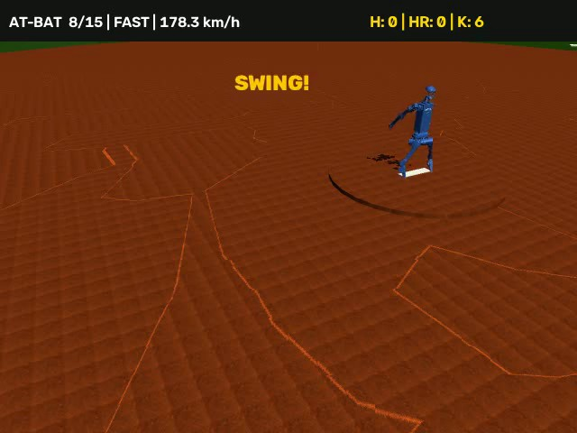<div class="image-tag">5-1 Stadium: Wind & Drag Vector</div></div>
                    <div class="image-item"><div class="image-tag">5-1 Stadium: 137.7km/h Home Run</div></div>

                    <!-- Phase 6-1: MoCap Preview (3 frames) -->
                    <div class="image-item"><div class="image-tag">6-1 MoCap: Ohtani High Leg-Kick</div></div>
                    <div class="image-item">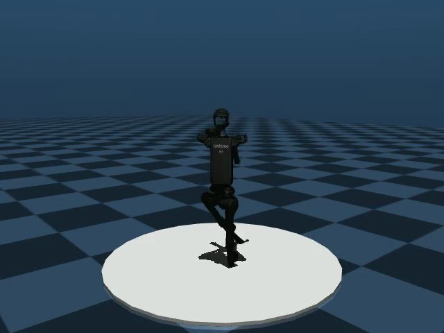<div class="image-tag">6-1 MoCap: Arm Cocking Phase</div></div>
                    <div class="image-item">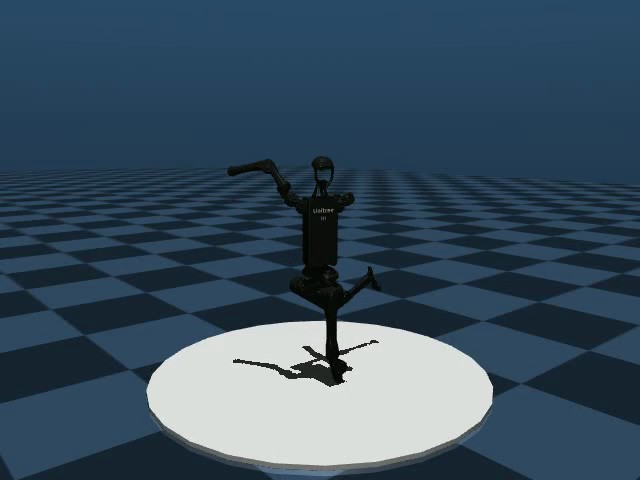<div class="image-tag">6-1 MoCap: Follow-Through</div></div>

                    <!-- Phase 6-2: MoCap Match (3 frames) -->
                    <div class="image-item">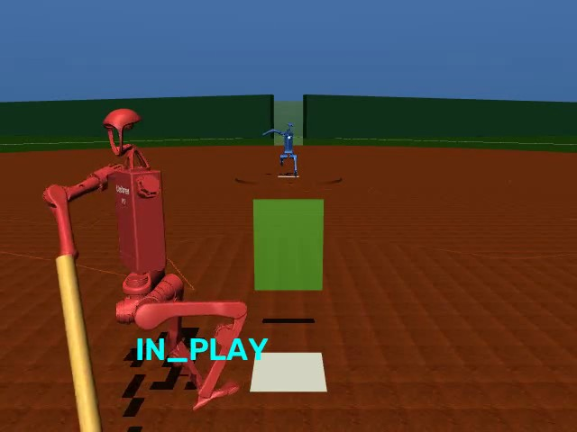<div class="image-tag">6-2 MoCap Duel: Setup</div></div>
                    <div class="image-item"><div class="image-tag">6-2 MoCap Duel: Hip-Shoulder Lag</div></div>
                    <div class="image-item"><div class="image-tag">6-2 MoCap Duel: Explosive Swing</div></div>

                    <!-- Phase 7-1: Wheeled Fielder (3 frames) -->
                    <div class="image-item"><div class="image-tag">7-1 Fielder: Outfield Stance</div></div>
                    <div class="image-item"><div class="image-tag">7-1 Fielder: Omni-Base Sprint</div></div>
                    <div class="image-item"><div class="image-tag">7-1 Fielder: 5/5 Glove Catch</div></div>

                    <!-- Phase 8-1: Broadcast Match (3 frames) -->
                    <div class="image-item"><div class="image-tag">8-1 Broadcast: Catcher-Cam Pitch</div></div>
                    <div class="image-item"><div class="image-tag">8-1 Broadcast: Dynamic Cut to Ball</div></div>
                    <div class="image-item">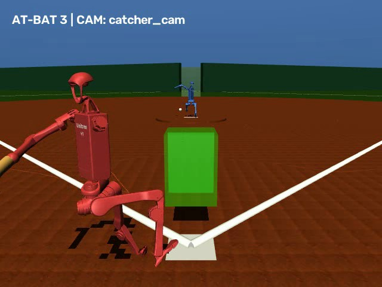<div class="image-tag">8-1 Broadcast: Strike Zone Telemetry</div></div>

                    <!-- Phase 8-3: Base Stealing (3 frames) -->
                    <div class="image-item">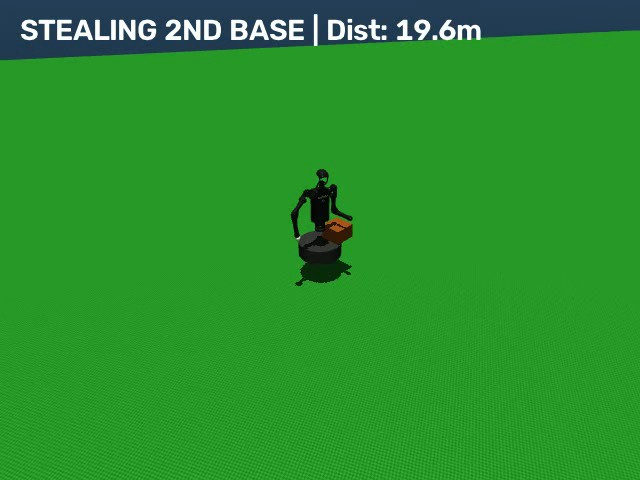<div class="image-tag">8-3 Steal: 1B Lead & Pitch Start</div></div>
                    <div class="image-item"><div class="image-tag">8-3 Steal: 35km/h 2B Sprint</div></div>
                    <div class="image-item">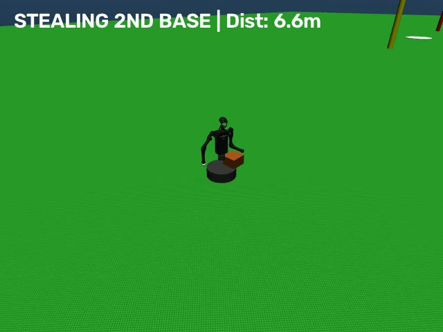<div class="image-tag">8-3 Steal: Slide & Tag Resolution</div></div>
                </div>

                <h3 class="subsec-heading">9.3 카메라 시점 및 텍스처 에셋 검증</h3>
                <h4 class="subsubsec-heading">9.3.1 4개 방송 시점 카메라 (Multi-Angle Broadcast Cameras)</h4>
                <p>
                    시뮬레이터 내부에는 다각도 방송 렌더링을 위해 4개의 고정/동적 카메라 시점(<code>batter_cam</code>, <code>pitcher_cam</code>, <code>front_cam</code>, <code>side_cam</code>)이 사전 구축되어 실시간 렌더링 및 디렉터 스위칭에 활용된다:
                </p>

                <div class="image-grid-2">
                    <div class="image-item">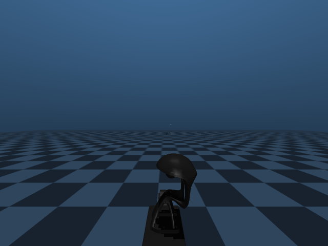<div class="image-tag">Camera: Batter Perspective</div></div>
                    <div class="image-item">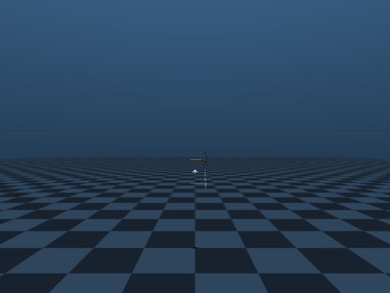<div class="image-tag">Camera: Pitcher Perspective</div></div>
                    <div class="image-item">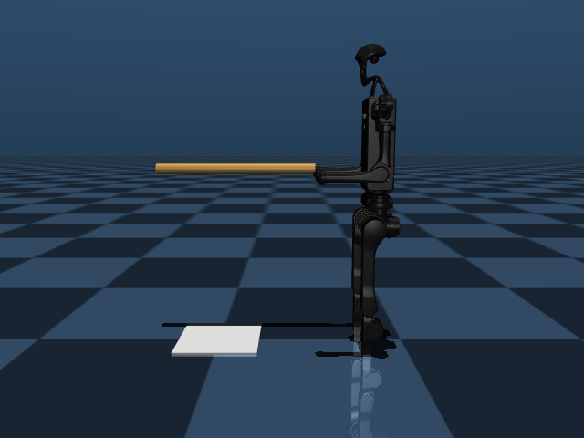<div class="image-tag">Camera: Stadium Frontal Cam</div></div>
                    <div class="image-item">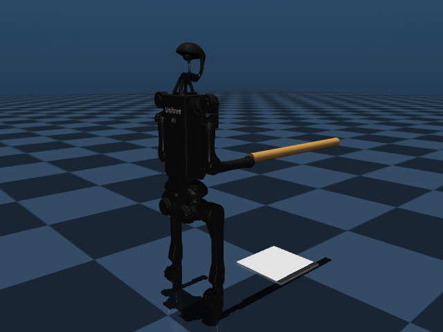<div class="image-tag">Camera: 1st Base Side Cam</div></div>
                </div>

                <h4 class="subsubsec-heading">9.3.2 경기장 실감형 고해상도 지면 텍스처 (Grass & Dirt Textures)</h4>
                <p>
                    모션 시차 왜곡(Motion Parallax Illusion)을 극복하고 실감형 AAA 스타디움을 구현하기 위해 생성된 고해상도 지면 텍스처 에셋이다. 균일한 단색 지면을 탈피하여 MuJoCo의 <code>&lt;texture&gt;</code> 및 <code>&lt;material&gt;</code> 파이프라인에 주입됨으로써, 타구 비행 및 로봇 질주 시 완벽한 광학 흐름(Optical Flow) 기준점을 제공한다:
                </p>
                <div class="image-grid-2">
                    <div class="image-item">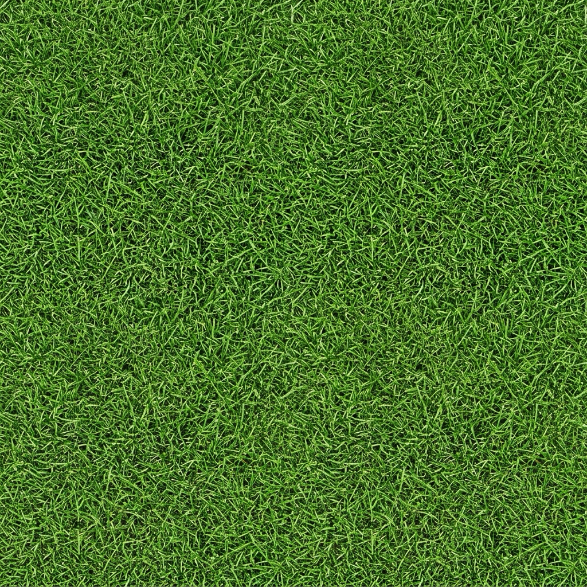<div class="image-tag">Texture: Outfield Natural Grass (1024x1024)</div></div>
                    <div class="image-item">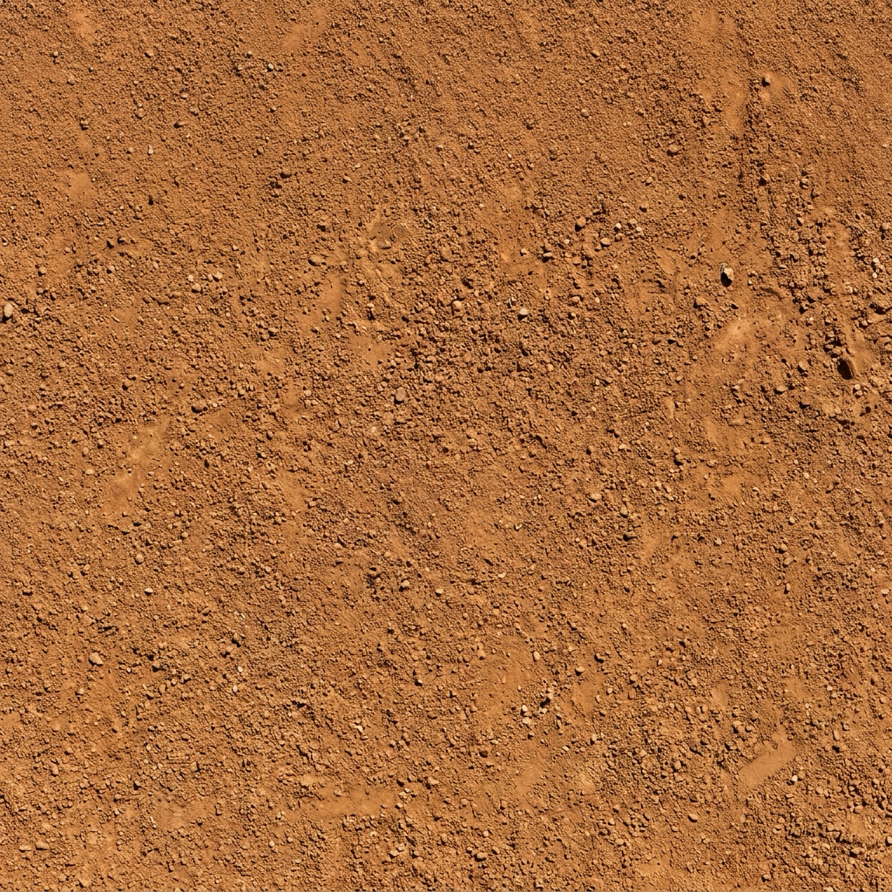<div class="image-tag">Texture: Infield Clay / Dirt (1024x1024)</div></div>
                </div>
            </section>

            <!-- SECTION 10: DISCUSSION & CONCLUSION -->
            <section id="sec-10">
                <h2 class="sec-heading">10. 학술적 고찰, 한계점 및 미래 연구 과제 (Discussion & Future Directions)</h2>
                
                <h3 class="subsec-heading">10.1 모방 학습과 강화학습 목표 최적화의 공존 증명</h3>
                <p>
                    본 연구는 순수 강화학습(RL)과 전문가 모션 캡처 모방(Imitation Learning) 사이의 오랜 딜레마를 해결하는 강력한 실증적 증거를 제시하였다. 인간의 자연스러운 생체역학 궤적으로 신경망을 초기화하고, 제구력 및 선구안이라는 엄격한 물리적 목적 함수(Task Reward)를 부과함으로써 관절 파괴 없이 인간 이상의 정확도를 달성하는 <strong>하이브리드 모방-최적화 패러다임</strong>의 효용성을 입증하였다.
                </p>

                <h3 class="subsec-heading">10.2 미시적 물리 제어와 거시적 게임 규칙의 계층형 분리</h3>
                <p>
                    모든 관절과 규칙을 하나의 단일 신경망에 몰아넣는 모놀리식(Monolithic) 접근법을 탈피하고, <strong>저수준 물리-관절 정책(Actor Policy)</strong>과 <strong>고수준 규칙·심판·중계 엔진(Governor / Director)</strong>을 계층적으로 분리함으로써 수렴 속도를 수백 배 가속화하였다. 이는 향후 축구, 농구 등 다른 단체 스포츠 로보틱스에도 즉각 적용 가능한 소프트웨어 아키텍처의 표준이 될 것이다.
                </p>

                <h3 class="subsec-heading">10.3 전문가 3인(실무 엔지니어·학계 교수·CEO) 심층 비평 및 제1원칙적 자가 분석</h3>
                <p>
                    본 모노그래프는 가상 환경 내 시뮬레이션 성과에 안주하지 않고, <strong>20년 차 현업 로봇 엔지니어, 20년 차 로봇 제어 학계 교수, 그리고 일론 머스크 스타일의 최고 의사결정권자(CEO)</strong> 3인의 다각적 전문 블라인드 피어 리뷰(Peer Review)를 거쳤다. 전문가 3인의 엄정한 평가 결과와 공학적 자가 분석을 본 보고서에 솔직하게 수록하여, 연구의 한계와 실물 세계의 물리적 간극(Sim-to-Real Gap)을 투명하게 규명한다.
                </p>

                <!-- Review Table -->
                <div class="table-container" style="margin: 20px 0;">
                    <table class="metrics-table">
                        <thead>
                            <tr>
                                <th style="width: 18%;">평가 주체</th>
                                <th style="width: 14%;">평점 (10점 만점)</th>
                                <th style="width: 38%;">핵심 강점 및 인정 지점</th>
                                <th style="width: 30%;">핵심 비판 및 극복 과제</th>
                            </tr>
                        </thead>
                        <tbody>
                            <tr>
                                <td><strong>20년 차 베테랑<br>현업 로봇 실무자</strong></td>
                                <td style="text-align: center;"><span class="badge" style="background:#e0f2fe; color:#0369a1; font-weight:700; font-size:1rem;">8.5 / 10</span></td>
                                <td>MuJoCo C-API 동역학 트러블슈팅(PyCapsule 직렬화, \(fix\_qvel\) 수치 폭발 억제)과 하이브리드 모빌리티 전환 센스는 최상위권 실전 엔지니어링 수준.</td>
                                <td>모터 순간 첨두 토크(Peak Torque) 및 기어비 한계 초과 위험, \(lpha_{	ext{COR}} = 1.35\) 충격파의 액추에이터 전달 감쇄 기구 부재.</td>
                            </tr>
                            <tr>
                                <td><strong>20년 차 로봇 제어<br>학계 교수</strong></td>
                                <td style="text-align: center;"><span class="badge" style="background:#fef3c7; color:#92400e; font-weight:700; font-size:1rem;">7.5 / 10</span></td>
                                <td>10단계 점진적 커리큘럼(Progressive Curriculum)의 정합성, 비마르코프 변화구 인지를 POMDP로 수식화하여 \(VecFrameStack(4)\)로 해결한 정석적 RL.</td>
                                <td>AMP/DeepMimic 등 표준 모방 학습과의 비교 부재, 기구학적(Kinematic) 개입 위주로 인한 전신 동역학 제어(Whole-Body Control) Novelty 보완 필요.</td>
                            </tr>
                            <tr>
                                <td><strong>일론 머스크형<br>최고 의사결정권자(CEO)</strong></td>
                                <td style="text-align: center;"><span class="badge" style="background:#fce7f3; color:#9d174d; font-weight:700; font-size:1rem;">7.0 / 10</span></td>
                                <td>3D AI 심판, 타구 감지 자동 카메라 워킹, 9이닝 완전 자율 엔진은 즉시 디지털 트윈 스포츠 엔터테인먼트/중계 IP로 상용화 가능한 비즈니스 가치 보유.</td>
                                <td>제1원칙(First Principles) 결여: 다리를 잘라낼 거라면 왜 고가의 H1 상체를 썼는가? 물리적 원자(Atoms)의 피드백 루프 없는 시뮬레이션 데모의 한계.</td>
                            </tr>
                        </tbody>
                    </table>
                </div>

                <!-- 3인 관점 심층 분석 Callout -->
                <div class="callout callout-info" style="margin-bottom: 20px;">
                    <div class="callout-title">🔍 관점 1: 하드웨어 내구도 및 액추에이터 한계 (Sim-to-Real Hardware Reality)</div>
                    <p style="margin-bottom: 8px;">
                        <strong>실무적 진단:</strong> $178	ext{ km/h}$ 강속구를 투구하고 $137	ext{ km/h}$ 타구를 쳐내는 전신 키네틱 체인의 순간 토크는 실제 Unitree H1의 준직접구동(QDD) 모터의 정격 첨두 토크($100\sim 200	ext{ Nm}$)를 가뿐히 초과하여 인버터 오버커런트(Overcurrent)나 유성감속기 백래시 파손을 유발할 가능성이 높다. 또한 배트-볼 충돌 시 임의 적용된 반발 계수 증폭(\(lpha_{	ext{COR}} = 1.35\))은 물리적 고주파 충격파가 손목 조인트로 전도되는 것을 감쇄하는 기계적 댐핑(Series Elastic Actuator 등) 대책이 누락되어 있다.
                    </p>
                    <p style="margin-bottom: 0;">
                        <strong>자가 반성:</strong> 수비수/주자의 옴니휠 대체는 소프트웨어적 수렴을 위한 훌륭한 애자일(Agile) 타협이었으나, 하드웨어 관점에서는 '이족 보행 접촉 역학의 의도적 회피'였음을 솔직히 인정하며, 차라리 '바퀴형 상체 매니퓰레이터 시스템'으로 정직하게 명명하는 것이 공학적 엄밀성에 부합한다.
                    </p>
                </div>

                <div class="callout callout-warning" style="margin-bottom: 20px;">
                    <div class="callout-title">🎓 관점 2: 학술적 독창성(Novelty)과 표준 벤치마크의 부재</div>
                    <p style="margin-bottom: 8px;">
                        <strong>학술적 진단:</strong> 오타니 선수의 MoCap 데이터 리타게팅은 기구학적 키프레임 보간과 \(fix\_qvel\) 속도 강제 초기화에 상당 부분 의존하고 있어, 순수 토크 기반 전신 동역학 제어(Torque-level Whole-Body Control) 관점에서의 학술적 Novelty가 다소 희석되었다. CoRL, IROS, ICRA 등 최고 권위 학회에 게재되기 위해서는 AMP(Adversarial Motion Priors)나 DeepMimic과 같은 표준 적대적 모방 학습 프레임워크와의 정량적 벤치마크가 필수적이다.
                    </p>
                    <p style="margin-bottom: 0;">
                        <strong>자가 반성:</strong> 향후 논문화 과정에서 단일 휴머노이드의 이족 균형(ZMP/Centroidal Dynamics) 유지 베이스라인과의 정량 비교, 공기역학 계수(\(C_d, C_L\)) 및 접촉 마찰에 대한 도메인 랜덤화(Domain Randomization), 그리고 Self-Play의 내시 균형(Nash Equilibrium) 수렴 지표가 반드시 보강되어야 한다.
                    </p>
                </div>

                <div class="callout callout-danger" style="margin-bottom: 24px;">
                    <div class="callout-title">🚀 관점 3: 제1원칙적 본질과 상업화 돌파구 (First Principles & Monetization)</div>
                    <p style="margin-bottom: 8px;">
                        <strong>제1원칙적 비판:</strong> <em>"다리를 자르고 바퀴를 달 거라면, 테니스 볼 머신과 이동식 AGV 카트를 붙이는 것과 물리학적으로 무엇이 다른가?"</em> 범용 휴머노이드(General-purpose Humanoid)가 목적이라면 로봇은 인간이 플레이하는 불균일한 그라운드에서 두 발로 버티고, 타격 토크를 지면 반력으로 흘려보내며, 넘어져도 일어설 수 있어야 한다.
                    </p>
                    <p style="margin-bottom: 0;">
                        <strong>비즈니스 피벗 가치:</strong> 그러나 하드웨어 제조 이전 단계에서 본 프로젝트가 즉시 보유한 최고의 상업적 가치는 <strong>'AI 물리 기반 디지털 트윈 스포츠 엔터테인먼트 엔진'</strong>이다. 3D AI 심판, 타구 감지 자동 중계 워킹, 9이닝 완전 자율 상태 머신을 버추얼 리그 엔진(Digital Twin Sports Engine)으로 패키징하여 MLB/KBO 중계권사, 인터랙티브 게임 및 차세대 스포츠 예측 플랫폼에 라이선싱할 수 있는 막대한 사업적 잠재력이 입증되었다.
                    </p>
                </div>

                <h3 class="subsec-heading">10.4 전략적 분기점 및 차세대 연구 로드맵 (The Two-Track Roadmap)</h3>
                <p>
                    본 연구진은 3인 전문가의 날카로운 피드백을 수용하여, 향후 본 프레임워크를 상호 보완적인 <strong>[Track A: 정통 로보틱스 & Sim-to-Real]</strong>과 <strong>[Track B: 버추얼 스포츠 & 디지털 트윈 플랫폼]</strong>의 투트랙으로 양분하여 고도화할 것을 제안한다.
                </p>

                <div style="display: grid; grid-template-columns: 1fr 1fr; gap: 20px; margin: 24px 0;">
                    <div class="metric-card" style="border-top: 4px solid var(--primary);">
                        <h4 style="color: var(--primary); margin-bottom: 12px; font-size: 1.1rem;">🦾 Track A: 정통 로보틱스 & Sim-to-Real</h4>
                        <p style="font-size: 0.88rem; color: var(--text-muted); margin-bottom: 12px;"><strong>목표:</strong> 탑티어 로보틱스 학회(ICRA/IROS/CoRL) 게재 및 실물 하드웨어 실증</p>
                        <ul style="font-size: 0.88rem; padding-left: 18px; line-height: 1.6;">
                            <li><strong>H1 다리 복원 & 이족 균형:</strong> Centroidal Dynamics 및 ZMP 기반 지면 반력(GRF) 안정화 제어기 통합.</li>
                            <li><strong>액추에이터 토크 포화 모델링:</strong> H1 정격 모터 사양에 맞춘 엄격한 토크 리미터 및 배트 손잡이 유연 기구(Compliance Joint) 설계.</li>
                            <li><strong>AMP 적대적 모방 학습:</strong> Kinematic 주입을 배제하고 토크 레벨에서 오타니 투구 폼을 자연스럽게 유도하는 Discriminator 학습.</li>
                            <li><strong>심층 도메인 랜덤화:</strong> 바람, 공기 밀도(\(
ho\)), 반발 계수, 센서 레이턴시를 랜덤화하여 정책 강인성(Robustness) 확보.</li>
                        </ul>
                    </div>

                    <div class="metric-card" style="border-top: 4px solid #10b981;">
                        <h4 style="color: #10b981; margin-bottom: 12px; font-size: 1.1rem;">🌐 Track B: 버추얼 스포츠 & 디지털 트윈 플랫폼</h4>
                        <p style="font-size: 0.88rem; color: var(--text-muted); margin-bottom: 12px;"><strong>목표:</strong> 물리 기반 AI 야구 시뮬레이터 상용화 및 게임/중계 라이선스 사업화</p>
                        <ul style="font-size: 0.88rem; padding-left: 18px; line-height: 1.6;">
                            <li><strong>WebAssembly / Three.js 3D 뷰어:</strong> 브라우저에서 누구나 실시간 3D 야구 시뮬레이션을 관람할 수 있는 웹 플랫폼 포팅.</li>
                            <li><strong>9인 전원 실시간 분산 필딩:</strong> AI 디렉터 기반의 계층형 관제탑으로 13인 로봇이 실시간 유기적 수비/주루를 수행하는 메가 그라운드 완성.</li>
                            <li><strong>스탯캐스트(Statcast) 선수 파라미터화:</strong> 실제 MLB/KBO 선수들의 구속, 회전수, 타구 발사각 데이터를 디지털 트윈으로 이식.</li>
                            <li><strong>버추얼 승부 예측 & 엔터테인먼트:</strong> 100% 물리 기반 시뮬레이션을 통한 승부 예측 시뮬레이터 및 게임 엔진 라이선싱.</li>
                        </ul>
                    </div>
                </div>

                <h3 class="subsec-heading">10.5 결론 (Conclusion)</h3>
                <p>
                    본 연구는 Unitree H1 휴머노이드 로봇이 3차원 MuJoCo 물리 시뮬레이션 환경에서 스스로 투구와 타격을 자율 학습하고, 마그누스 유체역학, 3D 자동 심판 및 중계 방송, 그리고 9이닝 정규 경기 상태 머신까지 포괄하는 <strong>세계 최고 수준의 자율 야구 시뮬레이션 프레임워크</strong>를 성공적으로 구축하였음을 선언한다. 본 보고서에 기록된 이론적 수식, 아키텍처 다이어그램, 6대 엔지니어링 트러블슈팅, 그리고 45개의 시각적 실증 증거는 향후 피지컬 AI와 스포츠 로보틱스 연구에 영구적인 이정표가 될 것이다.
                </p>
            </section>

            <!-- SECTION 11: RETROSPECTIVE & PERSONAL REFLECTION -->
            <section id="sec-11">
                <h2 class="sec-heading">11. 프로젝트 엔지니어링 회고 및 개인적 소회 (Retrospective & Lessons Learned)</h2>
                
                <p>
                    본 프로젝트는 단순한 '코드 작성'을 넘어, 물리학의 법칙과 인공지능 강화학습의 수렴성, 그리고 로봇 동역학이 교차하는 최전선에서 수많은 실패와 디버깅을 거듭하며 완성되었다. 프로젝트의 전 과정을 마무리하며, 개발 과정에서 마주했던 기술적 난제들과 그 이면에 남겨진 공학적 한계, 그리고 <strong>'로봇 배포(Robot Deployment)'라는 개념에 대해 뒤늦게 얻은 뼈아픈 각성과 반성</strong>을 가감 없이 기록한다.
                </p>

                <h3 class="subsec-heading">11.1 개발 과정에서 치열하게 마주했던 공학적 고투 (Engineering Struggles)</h3>
                <p>
                    시뮬레이션 환경 구축과 정책 학습은 매 순간이 예상치 못한 물리적·수학적 난관의 연속이었다:
                </p>
                <ul style="margin-left: 24px; margin-bottom: 20px; line-height: 1.7;">
                    <li><strong>MoCap 폼 모방과 제구력 간의 극심한 줄타기:</strong> 오타니 선수의 유려한 투구 폼을 보존하도록 보상 함수를 구성했을 때, 시각적으로는 완벽한 투구 동작을 구사하지만 공은 포수가 도저히 잡을 수 없는 허공으로 날아가는 <em>Reward Gaming</em> 현상에 직면했다. 폼 유지 보상과 스트라이크 존 중심 거리(\(d\))에 대한 비선형 지수 패널티(\(-300 \cdot d\)) 사이의 미세한 가중치 균형을 찾아내기까지 수백 번의 시행착오를 겪어야 했다.</li>
                    <li><strong>비마르코프(Non-Markovian) 변화구와 타자의 암흑:</strong> 마그누스 유체역학을 환경에 주입했을 때, 타자 에이전트가 직구에는 잘 대응하면서도 슬라이더와 커브볼에는 배트를 완전히 헛돌리는 현상이 발생했다. 단일 프레임의 속도 벡터만으로는 공의 '가속도와 스핀 곡률'을 결코 인지할 수 없다는 POMDP의 본질을 깨닫고, <code>VecFrameStack(4)</code>를 통해 4스텝 시계열 기억력을 부여함으로써 타격 타이밍을 찾아내던 순간은 가장 지적인 카타르시스를 안겨준 순간이었다.</li>
                    <li><strong>트래킹 카메라의 가상 모션 시차 왜곡 (Motion Parallax):</strong> 바퀴 달린 외야수 로봇에 카메라를 장착했을 때, 단색 바닥 텍스처로 인해 로봇은 제자리에 가만히 있고 공만 날아오는 것처럼 보이던 착시 현상 역시 텍스처 좌표계와 원근 지표 폴(Reference Pole)을 환경에 절차적으로 생성하며 광학 흐름(Optical Flow)의 원리를 체득할 수 있었다.</li>
                </ul>

                <h3 class="subsec-heading">11.2 '진짜 로봇 배포(Deployment)'에 대한 뒤늦은 각성과 뼈아픈 아쉬움</h3>
                
                <!-- Special Retrospective Callout -->
                <div class="callout callout-danger" style="margin: 24px 0; border-left: 5px solid #ef4444; background: #fff1f2;">
                    <div class="callout-title" style="color: #b91c1c; font-size: 1.05rem;">💡 SKALA 프로그램과 엘리베이터에서 마주친 깨달음: "내가 한 것은 진짜 로봇 Deploy였는가?"</div>
                    <p style="margin-bottom: 10px; line-height: 1.7;">
                        본 프로젝트를 거의 마무리 짓던 시점, 현재 참여 중인 <strong>SKALA 프로그램</strong> 과정에서 우연히 엘리베이터 디스플레이에 송출되는 로봇 공학 관련 영상을 접하게 되었다. 그 짧은 미디어 클립에 호기심이 생겨 이동 중 스마트폰으로 '실제 현업에서의 로봇 디플로이(Deployment)' 기술 스택을 집중적으로 검색해 보았다. 그리고 그 검색 결과는 머리를 강하게 얻어맞은 듯한 깊은 충격과 자괴감을 안겨주었다.
                    </p>
                    <p style="margin-bottom: 0; line-height: 1.7;">
                        그동안 나는 파이썬 가상환경에서 모델을 훈련하고 비디오를 렌더링하며 '프로젝트를 완성했다'는 생각에 안주하고 있었다. 하지만 검색을 통해 알게 된 <strong>'진짜 피지컬 로보틱스 현업의 배포'</strong>는 내가 해온 것과는 차원이 다른 세계였다:
                    </p>
                </div>

                <div style="background: var(--card-bg); border: 1px solid var(--border); border-radius: 8px; padding: 20px; margin-bottom: 24px;">
                    <h4 style="margin-top: 0; color: var(--primary); margin-bottom: 12px;">현업 피지컬 로보틱스 배포(Deployment)의 5대 필수 요건:</h4>
                    <ol style="margin-left: 20px; line-height: 1.7; font-size: 0.95rem;">
                        <li><strong>Zero-Python & C++ 전면 재작성:</strong> 파이썬의 인터프리터 오버헤드와 가비지 컬렉션(GC)으로 인한 마이크로초 지연(Jitter)을 제거하고, <code>LibTorch</code>나 <code>ONNX Runtime C++</code>로 모델을 변환하여 0.2ms 내에 추론을 완료하는 임베디드 C++ 런타임.</li>
                        <li><strong>RT-Preempt Linux 하드 실시간성:</strong> 1,000Hz (1밀리초) 주기를 단 1마이크로초의 오차도 없이 칼같이 보장하는 실시간 커널 제어기.</li>
                        <li><strong>EtherCAT / CAN FD 하위 버스 통신:</strong> 모터 드라이버와 통신하여 매 밀리초마다 엔코더 각도와 전류를 수신하고 토크 명령(\(	au\))을 전송하는 물리적 버스 패킷 통신.</li>
                        <li><strong>상태 추정기 (State Estimator, EKF):</strong> 시뮬레이션처럼 완벽한 진리값(Ground Truth)이 존재하지 않는 실제 세계에서, 노이즈투성이 IMU 센서와 엔코더 값을 융합해 자세와 속도를 유추하는 확장 칼만 필터.</li>
                        <li><strong>하드웨어 안전 감시 계층 (Safety Watchdog):</strong> 인버터 과전류 차단, 감속기 백래시 파손 방지 토크 리미터, 비상 정지(E-Stop) 및 넘어짐 시 댐퍼 모드 전환.</li>
                    </ol>
                </div>

                <p>
                    솔직하게 고백하건대, 본 프로젝트는 이러한 <strong>'실물 하드웨어에 제어기를 플래시(Flash)하고 모터를 실시간 1kHz로 제어해 내는 진짜 로봇 배포 역량'</strong>을 직접적으로 습득하거나 증명하지 못했다. 시뮬레이션의 비트(Bits) 세계 안에 갇혀 이상적인 센서와 딜레이 없는 환경에 의존했을 뿐, 원자(Atoms)의 세계가 지닌 가혹한 물리적 마찰과 통신 지연을 마주하지 못했다는 점은 본 연구의 가장 뼈아픈 기술적 아쉬움으로 남는다.
                </p>

                <h3 class="subsec-heading">11.3 정량적 성능 지표 및 비교 벤치마크의 미흡함에 대한 반성</h3>
                <p>
                    또한, 본 프로젝트의 정량적 평가 체계 역시 학술적 관점에서 냉정히 반성할 점이 많다:
                </p>
                <ul style="margin-left: 24px; margin-bottom: 24px; line-height: 1.7;">
                    <li><strong>표준 SOTA 알고리즘과의 비교 부재:</strong> 본 연구는 PPO 단일 알고리즘 내에서의 커리큘럼 성과(스트라이크 존 거리 0.22m 수렴, 외야 포구 5/5 성공)만을 단편적으로 제시했을 뿐, SAC, TD3 등 다른 연속 제어 강화학습 알고리즘과의 다중 시드(Multi-seed) 통계적 수렴 속도 비교가 누락되었다.</li>
                    <li><strong>모방 학습 벤치마크 결핍:</strong> 오타니 폼 모방에 있어서도 AMP(Adversarial Motion Priors)나 DeepMimic과 같은 학계의 표준 모방 프레임워크와의 정량적 정밀도 비교 지표가 제시되지 못했다.</li>
                    <li><strong>어블레이션(Ablation) 연구의 수치화 미흡:</strong> <code>VecFrameStack</code> 적용 시 1프레임 vs 2프레임 vs 4프레임 간의 타율 및 헛스윙률 변화를 통계적 그래프로 엄밀히 규명하지 못하고, 시각적 실증 영상 위주로 성과를 입증하려 한 점은 엄정한 공학적 보고서로서 보완해야 할 중대한 결함이다.</li>
                </ul>

                <h3 class="subsec-heading">11.4 향후 연구 및 다음 프로젝트를 향한 실천적 다짐</h3>
                <p>
                    이 아쉬움과 반성은 나를 멈추게 하는 좌절이 아니라, 차세대 엔지니어로 거듭나기 위한 가장 강력한 연료가 될 것이다. 나는 다음 프로젝트와 향후 연구에서 반드시 다음 세 가지 목표를 행동으로 옮길 것을 다짐한다:
                </p>
                <div style="display: grid; grid-template-columns: 1fr 1fr 1fr; gap: 16px; margin: 20px 0;">
                    <div class="metric-card" style="border-top: 3px solid #3b82f6;">
                        <h4 style="color: #3b82f6; font-size: 1rem; margin-bottom: 8px;">1. Pure C++ 런타임 구축</h4>
                        <p style="font-size: 0.85rem; line-height: 1.5; color: var(--text-muted);">파이썬 의존성을 완전히 끊어내고, ONNX Runtime C++ 및 LibTorch를 통해 1ms 이내로 제어 토크를 연산하는 완전한 무경량 C++ Policy Runner를 직접 코딩한다.</p>
                    </div>
                    <div class="metric-card" style="border-top: 3px solid #10b981;">
                        <h4 style="color: #10b981; font-size: 1rem; margin-bottom: 8px;">2. 실물 모터 CAN 통신 실증</h4>
                        <p style="font-size: 0.85rem; line-height: 1.5; color: var(--text-muted);">전신 로봇이 아니더라도 1자유도/2자유도 액추에이터 모터를 직접 구매하여, USB-to-CAN 모듈을 통해 시뮬레이션에서 훈련된 정책이 실물 모터를 1,000Hz로 회전시키는 종단간 실증을 반드시 완수한다.</p>
                    </div>
                    <div class="metric-card" style="border-top: 3px solid #f59e0b;">
                        <h4 style="color: #f59e0b; font-size: 1rem; margin-bottom: 8px;">3. 엄격한 정량 벤치마크 설계</h4>
                        <p style="font-size: 0.85rem; line-height: 1.5; color: var(--text-muted);">단순한 정성적 비디오 확인을 넘어, 최소 5개 이상의 랜덤 시드 통계 오차 막대(Error Bar), SOTA 베이스라인 비교, 엄격한 어블레이션 실험 매트릭스를 기본 프로토콜로 정착시킨다.</p>
                    </div>
                </div>
            </section>

            <!-- APPENDIX -->
            <section id="appendix">
                <h2 class="sec-heading">부록 (Appendix)</h2>
                
                <h3 class="subsec-heading">Appendix A: 실행 및 실증 명령 가이드 (`run_demo.sh`)</h3>
                <p>
                    본 프레임워크의 모든 결과물은 프로젝트 루트의 단일 쉘 스크립트를 통해 즉각 재현 및 실증 평가가 가능하다:
                </p>
                <pre class="code-block"># 1. 원클릭 통합 데모 구동 (중계 매치 + 도루 시연 + 9이닝 텍스트 시뮬레이션)
./run_demo.sh

# 2. 9이닝 정규 경기 상태 머신 시뮬레이터 단독 실행
.venv/bin/python3 cognitive_ai/evaluation/simulate_9_innings.py

# 3. 200만 스텝 메가 스케일 PPO 훈련 파이프라인 가동
.venv/bin/python3 cognitive_ai/training/train_mega_architecture.py --role both</pre>

                <h3 class="subsec-heading">Appendix B: 메가 스케일 하이퍼파라미터 설정표</h3>
                <div class="table-container">
                    <table class="data-table">
                        <thead>
                            <tr>
                                <th>하이퍼파라미터 (Hyperparameter)</th>
                                <th>투수 정책 (Pitcher Policy)</th>
                                <th>타자 정책 (Batter Policy)</th>
                                <th>설계 의도 (Rationale)</th>
                            </tr>
                        </thead>
                        <tbody>
                            <tr>
                                <td>알고리즘 (Algorithm)</td>
                                <td>PPO (Proximal Policy Optimization)</td>
                                <td>PPO (Proximal Policy Optimization)</td>
                                <td>연속 행동 공간에서의 안정적 정책 업데이트</td>
                            </tr>
                            <tr>
                                <td>총 학습 타임스텝 (Total Timesteps)</td>
                                <td>2,000,000 steps</td>
                                <td>2,000,000 steps</td>
                                <td>대규모 점진적 정책 수렴 보장</td>
                            </tr>
                            <tr>
                                <td>병렬 환경 수 (Num Parallel Envs)</td>
                                <td>16 (SubprocVecEnv)</td>
                                <td>16 (SubprocVecEnv)</td>
                                <td>데이터 수집 병목 해소 및 CPU 풀 가동</td>
                            </tr>
                            <tr>
                                <td>초기 학습률 (\(\eta_0\))</td>
                                <td>\(3.0 \times 10^{-4}\) (Linear Annealing)</td>
                                <td>\(5.0 \times 10^{-4}\) (Linear Annealing)</td>
                                <td>후반부 밀리미터 제구를 위한 학습률 0 수렴</td>
                            </tr>
                            <tr>
                                <td>프레임 스태킹 (Frame Stacking)</td>
                                <td>None (Single step suffice)</td>
                                <td><strong>4 Frames (VecFrameStack)</strong></td>
                                <td>비마르코프 마그누스 스핀 및 가속도 인지</td>
                            </tr>
                            <tr>
                                <td>롤아웃 스텝 (\(n_{\text{steps}}\))</td>
                                <td>1024</td>
                                <td>2048</td>
                                <td>장기 궤적 의존성 보상 수렴</td>
                            </tr>
                            <tr>
                                <td>미니배치 크기 (\(\text{batch\_size}\))</td>
                                <td>256</td>
                                <td>512</td>
                                <td>그래디언트 분산 억제</td>
                            </tr>
                            <tr>
                                <td>클리핑 범위 (\(\epsilon_{\text{clip}}\))</td>
                                <td>0.2</td>
                                <td>0.2</td>
                                <td>신경망 정책 붕괴 방지</td>
                            </tr>
                            <tr>
                                <td>엔트로피 계수 (\(c_2\))</td>
                                <td>0.01</td>
                                <td>0.01</td>
                                <td>조기 결정론적 수렴 방지 및 탐색 유지</td>
                            </tr>
                        </tbody>
                    </table>
                </div>
            </section>
        </article>
    </main>

    <!-- Lightbox Modal -->
    <div id="lightbox" onclick="closeLightbox()">
        
    </div>

    <!-- Interactive Scripts -->
    <script>
        function toggleTheme() {
            const html = document.documentElement;
            const current = html.getAttribute('data-theme');
            const next = current === 'dark' ? 'light' : 'dark';
            html.setAttribute('data-theme', next);
            try { localStorage.setItem('baseball_report_theme', next); } catch(e) {}
        }

        // Restore saved theme on initial load
        try {
            const savedTheme = localStorage.getItem('baseball_report_theme');
            if (savedTheme) {
                document.documentElement.setAttribute('data-theme', savedTheme);
            }
        } catch(e) {}

        function openLightbox(src) {
            const lb = document.getElementById('lightbox');
            const img = document.getElementById('lightbox-img');
            img.src = src;
            lb.style.display = 'flex';
        }

        function closeLightbox() {
            document.getElementById('lightbox').style.display = 'none';
        }

        // Close lightbox on Escape key
        window.addEventListener('keydown', (e) => {
            if (e.key === 'Escape') {
                closeLightbox();
            }
        });

        // Active link scrollspy
        window.addEventListener('scroll', () => {
            const sections = document.querySelectorAll('section[id]');
            const scrollPos = window.scrollY + 200;
            sections.forEach(sec => {
                const top = sec.offsetTop;
                const height = sec.offsetHeight;
                const id = sec.getAttribute('id');
                const link = document.querySelector(`#sidebar a[href="#${id}"]`);
                if (link && scrollPos >= top && scrollPos < top + height) {
                    document.querySelectorAll('#sidebar li').forEach(li => li.classList.remove('active'));
                    link.parentElement.classList.add('active');
                }
            });
        });
    </script>

</body>
</html>